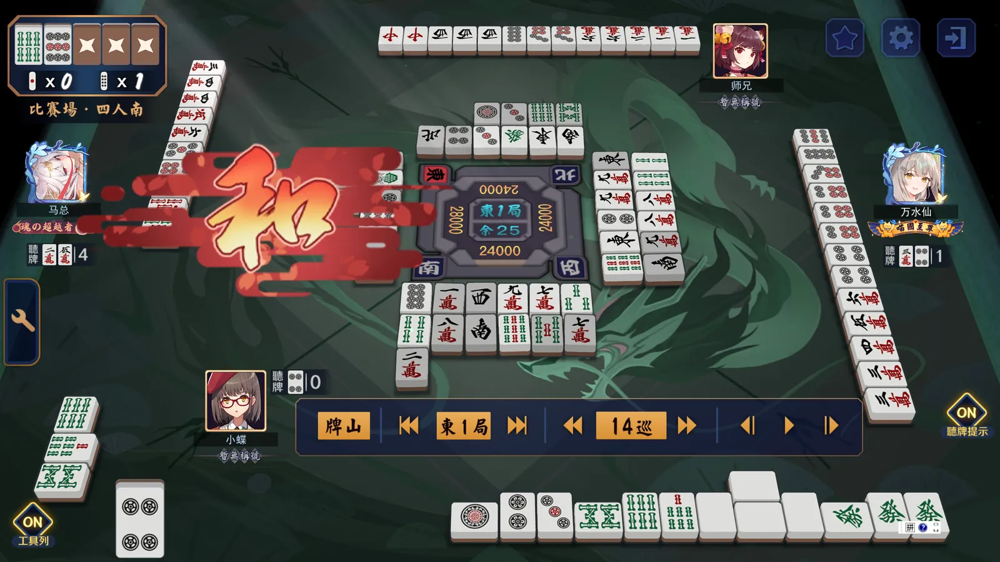

第十章：副露判断
我们出发咯。副露判断是我们在第二卷中学习的最后一种重要判断了。与立直判断相同，副露判断也是受攻防、打点、场况三大基础战略判断指导的战术判断。然而，与立直判断不同的是，副露判断往往是比较消极的。换言之，“立直不需要理由，但是副露一定需要理由”。
已经到了这里的同学，其实应该对这句话有更加深刻的理解了。我们在上一章花费了大量的篇幅，一起学习了立直判断，列举了这样那样的立直与默听角度，当然并不能绝对的讲“立直完全不需要任何理由”，而是说“在实战中，能立直却不立直的牌，一定需要其他种种原因支持”。同理，“副露一定需要理由”并不是说“能门清就不副露”，而是说“破坏了门清去副露的牌，一定也需要其他种种原因支持”。
在实战过程中，笔者真的见证了不少的“乱立直、乱默听，乱副露”，而且也渐渐理解了类似问题的“症结”之所在。雀豪以上的中级者们，有很多都存在非常典型而严重的类似问题。他们并不是不知道基本的牌理牌效，而是对实战战场上的立直判断与副露判断有“自己的理解”，其中就不乏一些比较错误的理论思想，这些才是他们战术判断错误率居高不下的罪魁祸首。换言之，这是个思想问题，是个政治问题。我用一句话就可以提纲挈领的概括这个问题的核心：副露是暴露了手牌信息的强进攻，是让场况倾向于“混乱”的战术动作。不论某一次具体的副露有着什么样的战略目标（不论是铲庄也好，是速攻也罢，甚至是更高级的兜形听、破一发，更甚于长距离的后付、接电报、bluff），副露这个战术动作在客观上一定起到了“化大为小、化整为零”的“熵增”效果。
那么，这种整体上的混乱效果，在长期上对谁有利呢？是不是像立直判断一样，几乎绝对的对先制家有利呢？答案是完全否定的。上一章的结尾，我谈到了毛主席的军事思想。正所谓“军事是政治的延续”，这里，我再插两段题外话，先给同学们讲两个小故事，然后再以此为根据，说说具体的副露判断。
1948年10月，国民党沈阳守将、抗日名将卫立煌与蒋介石政府离心离德，据守沈阳坐观成败，不发一兵一卒，同为抗日名将的廖耀湘盘踞在沈阳外围据点。虽然野战区形势一片大好，数十万国民党军已经被压制在了几个孤立的据点，但是这种深沟高垒、闭门坚守的态势给东北野战军解放辽沈全境造成了极大的阻力。卫立煌集团的武器装备精良，沈阳又是重兵把守的重工业城市，虽然东野的炮兵部队也开始初步形成规模，但是林彪、罗荣桓部如果强攻，绝对讨不到任何便宜，只会造成很大的牺牲。
然而，天才的元帅毛主席慧眼如炬，直接锁定了左右整个战局战略胜利的关键：锦州。锦州是东北的门户，是沟通东北与华北的陆上必经之路。正如毛主席所言，“锦州就像一根扁担，一头挑东北，一头挑华北，现在就是要打折这根扁担”。与此同时，天才的将军林彪直接找到了战术上胜利的捷径。
政治意义上，锦州是国民党必须坚守的据点，否则数十万国民党军就会被困死在山海关外。因此，林彪先引蛇出洞，围城打援，以惨重的代价拿下了锦州外围的据点配水池，逼迫沈阳外围的廖耀湘集团救援。随后，林彪又来了一招浑水摸鱼，在辽西平原左穿右插、四面围堵，成功打乱了敌我双方的所有师以上建制。廖耀湘部退路被切断，被迫在辽西战场陷入了以团、营、连为基本单位的混战。
由于基层组织度与单兵战斗力相差过于悬殊，在混战中，廖耀湘第九兵团临时指挥部被东野一个连的战士捣毁（这也是神了hhh），文件被烧毁、电台被端掉。廖耀湘部的指挥系统彻底瘫痪。48个小时内，散落在辽西平原上的国民党军失去指挥，变成了热锅上的蚂蚁、待宰的羔羊，兵无斗志，溃不成军。打扫战场时，第九兵团大量的师、团级军官或杀或俘，不计其数的辎重被缴获，10万基层官兵完全失去建制，互相践踏，全军覆没，廖耀湘在乱军中被活捉。
此役，锦沈的国军主力遭到毁灭性打击，东北的解放指日可待。十天前，锦州就已经在孤立无援的情况下被攻破，锦州守将、东北战区的二把手范汉杰被活捉；两天后，沈阳的卫立煌难以为继，独自乘坐飞机仓皇逃窜，把10万沈阳守军全留给了东野。沈阳军心已乱，几乎没有组织像样的抵抗。随后，辽沈战场上数以十万计的国民党官兵先后放下了武器。历时50天的辽沈战役以完胜告终。
我再来分享一个类似的战争故事。
就在两年后，1950年12月，朝鲜战场长津湖附近，美七师在飞机、坦克的重火力掩护下高歌猛进。志愿军第20军负责阻击，不但武器装备被完全碾压，而且完全没有制空权，补给线早已被重创。然而，“穿插包围”的游击战术再一次创造了奇迹。
20军在长津湖附近，以极其惨重的代价拖住了美陆战一师（冰雕连的故事原型），赢得了战术切割的时间与空间。随后，志愿军第27军一路奔袭，在长津湖附近的公路上，切割包围了美七师。双方的建制又被彻底打乱，美军的制空火力完全失效。虽然美军的战斗力和组织度远远不是美械国军能比的，志愿军单兵的武器装备也严重落后，但这些就都是可以通过战术、士气和人数弥补的了。
混战中，美军飞机不敢再密集扫射与投弹，只能向公路两边投放燃烧弹，企图制造隔离带、迟滞志愿军向公路的攻势。美七师北极熊团3000余名特战队员在十余辆坦克的掩护下，沿公路向南掉头，大举突围。在火海中，连地面重炮部队的标的物都已经难以辨识，美陆战一师外围接应部队的信号弹也早已被滚滚狼烟吞没。上万志愿军战士对包围圈内分散的3000多敌军展开了惨烈的白刃战。虽然美军基层建制完整，组织度同样极高，但是夜色中漫山遍野的志愿军随着噩梦一样的冲锋号猛扑过来，美军早已顾此失彼、气为之夺。虽然美军仍然通过电台进行有效的指挥，但是先后几任战地指挥官都被志愿军以步枪、刺刀甚至牙齿乱刃分尸。美军在恐怖的黑暗里各自为战，被志愿军打了个心胆俱裂。
24个小时内，企图突围的美七师精锐北极熊团3000余众被27军全歼。此役，北极熊团团长被击毙，团旗被缴获。美陆战一师疲于奔命，仓皇撤离了长津湖战场，在雪夜中侥幸逃脱（运气真好，差点就被包了饺子。美陆战一师如果被成建制歼灭一部分，历史恐怕就要改写了）。然而北极熊团就没那么幸运了，几乎全留在了朝鲜的冬天里。在完全无法弥补的工业实力差距下，志愿军对美军精锐打出了恐怖的交换比，长津湖战役以美军空前的混乱与撤退而告终。
总之，我们可以断言：如果东野与卫立煌部在沈阳硬磕，最好的结果也就是战略相持；如果志愿军与美陆战一师在长津湖决战，战役的结果只能是弹尽粮绝、全军覆没。然而，我军在这两次战役中都采用了“乱中取胜”的战术，面对负隅顽抗的国军时，破僵局而全胜；面对占尽优势的美军时，逆绝境而惨胜。
一把牌为什么打着打着就点炮了，或许不太容易分析。但是这两场大仗，我们为什么打赢了，这可太好解释了。这完全是因为我们的战士素质过硬（方方面面都是如此，类比麻将中的基础牌效）、基层组织科学（类比行牌规划）、高级将领指挥得当（类比基础判断）。这是不争的事实，没有任何解释的意义。
换言之，类比到立直麻将中，搞乱局面只对基础雀力高的雀士有利。中级者主动打“散手牌”，只会更打不过上级者。正如曾国藩对太平军的战术一样，“结硬寨、打呆仗”才是更有利于“一般人”的明智选择。只有老老实实的不断完善基础牌效、行牌规划、基础判断，兵对兵、将对将的打阵地战，才能在短期内稳定战绩。而且，最为重要的是，这恰恰是中级者不断提升雀力，后续在战略上争取主动的必经之路。谁都是这么过来的，着急一点用都没有喵！
此外，类比这两个战争故事，即使是共产党这样炉火纯青的“上级者”，也不可避免的在“乱战”中付出相当的代价（类比副露手的铳率更高、打点更小）。这是根本性的原理所决定的现象，不可能被任何人颠覆。
因此，总而言之，all in all，中级者一定一定要功利性的副露！讲出具体的、当下的理由就可以。千万不要马上去学上级者的副露！举个例子，ml中园田贤、渡边太、小林刚等人的某些副露，就是完全意义上的“战术副露”，是通过不常规的战术动作，直接服务于最根本的战略目标的“乱战策略”。
换言之，明智的做法一定是：等到我们能够扮演好林彪、彭德怀时，再去玩相应的战术，否则一旦陷入混战，我们能扮演的，只能是辽西平原上四面楚歌的廖耀湘，最好也就是长津湖畔任人宰割的北极熊。
因此，以下我们只学习每一个实战例子中对应的“功利性”副露理由。不进行系统性的总结，否则只会误导同学们的实战副露判断。换言之，为了什么（战略）副露都可以，但是暂时不能为了副露（战术）而副露。这就是副露判断与立直判断的最本质区别。说了这么多有的没的，同学们要尽量理解哦~
我们来看第一个例子。
 马总白鸥小娄
马总白鸥小娄主视角璃央是东一局自亲。这里，这个双东就是必须要鸣出的，很难想象任何不碰双东的理由。这就是典型的“碰役牌放弃立直手”的牌姿，取得役牌双东后，可以进一步鸣出坎三饼、二五条和雀头一万，直奔2番连庄全速前进。
实战的场况下，即使超门清流选手也不会在东一局放过第一枚双东不鸣。这是因为即使连摸坎三饼、二五条之后立直，也只能听到损2的双碰，比起副露手而言这实在差出太多了。
就本人而言，一万的场况不直接参与副露判断，东风的场况一定程度上会影响副露标准。对于东一的自亲而言，只要不是牌已经差到一定程度，第二枚双东是一定会碰的，否则就很难和牌保庄了。实战牌姿下，第一枚双东也会坚决碰出，第一巡打就第一巡碰，第10巡打就第10巡碰。本人不碰第一枚双东的下限是牌姿中的幺鸡换成七万（多一组好形变成六搭子），而且一万不带损，此时我认为碰不碰第一枚双东就两可。如果第六搭子也是好形（四饼换成三饼一类），早巡的第一枚双东是一定不会鸣的，鸣出第一枚双东的巡目标准为第7巡。当然了，第二枚双东是一定会鸣出的，即使晚巡碰双东不听，也会食延这种双东。
此外，如果巡目已经不早，数牌搭子待牌的场况也是很重要的决策量。如果存在场况已经不容乐观的愚形甚至好形，这种双东都会非常倾向于直接鸣出了。
换言之，标准的鸣役牌放弃立直手的副露判断一般是：顺利、有效的先制是先决的，否则就要积极副露。
围绕“早巡役牌碰不碰”这个大课题，我们继续来看几个例子。
 老罗马总小娄万水仙
老罗马总小娄万水仙主视角一姬是东四局大四位。这里，一姬选择了鸣听东风，这肯定是不好的做法。虽然碰了东风之后，可以立刻好形听牌2000点，但是保持门清也已经是带好形的一向听，万子侧的四连形也存在极大的延展空间，巡目尚早，这是个非常容易先制的牌。
此外，这里的顺位场况也是非常重要的决策点。除了顺利、有效的先制外，副露相比于立直而言损失的打点潜力是次重要的。这里，一姬摸到朵拉八万就可以来到两面、三面一向听，立直自摸就有满贯，直接入目先制自摸也有确定的满贯。在这种大四位东场，满贯自摸绝对不是两番小牌所能碰瓷的，这个牌必须要瞄准满贯自摸才行，不能去副露这种两番小牌。
总之，相比于上一个例子中几乎必须要碰的双东，一姬这种役牌东风几乎是禁止碰出的，很难想象会有上级者在这里选择早巡碰听个2000点。
我们来看下一个例子。
 马总老罗小娄
马总老罗小娄主视角璃央是东一局北起子家。这里，这种红中就是可碰可不碰的类型。
本人是不碰派。条子侧的形状还比较散乱，马上就要在条子侧形成第五搭子了，就这样碰个两番底色的小牌，我还是有点不情愿的。这里即使我是亲家，第一枚红中也非常倾向于不碰，朵拉字场况下的亲立还是很强的。
然而，碰中派也有很合理的解释。这个牌已经有一面子、两好形，用红中当雀头没有平和，立直手相比于副露手而言，仅仅是自摸大了一番，放弃副露权毕竟牺牲了相当的速度。考虑到这个牌还没有雀头候补，碰了红中之后可以在等待两个好形进张的同时，用大量的手牌空间整理出一个雀头，这是相当容易的。
一般而言，这种程度的副露就是见仁见智的，副露损失了可以接受的打点潜力，提升了一定程度的整体速度。考虑到门清还缺搭子，即使放过红中、保持门清、自己摸牌，也未必能迅速听牌。东一局大平场下，副露个2000点也是完全可以接受的。
此外，考虑到朵拉字的场况，碰了役牌之后可以更加灵活的利用朵拉字，这也是碰红中的理由之一。
我们来看下一个例子。
 马总白鸥老罗
马总白鸥老罗主视角小鸟是南一局二位。像实战中小鸟放过的这种红中，就是坚决不能碰的典型。试问碰了这种红中又能如何呢？配牌简直是不堪入目，就算后续又摸到了役牌对子，或者朵拉靠张了，拼死拼活，和了个2000（4300）点，又能怎么样呢？对场况没有任何本质影响。
换言之，这就是所谓的“通过风险要考虑回报”。这种牌一旦开始副露，就要副露到底了，基本就是一发不可收拾，很难再保留有效的手牌空间进行防守。支持小鸟进行这种副露的回报，理应是有着相当和率的、一定打点的牌姿，绝对不能是实战这种哪也不挨着哪、本质糯米小牌的烂账。
这就是除了有效先制、打点损失之外的第三种最经典的副露判断：清爽的副露。副露手一定要简洁明快、直奔和牌。实战中如果小鸟第一巡就碰了红中，那就是典型的“拖泥带水”的副露，是典型的恶手，是严重得不偿失的副露。
 马总白鸥老罗
马总白鸥老罗第3巡，小鸟的牌姿翻天覆地。此时，这种白板就是必须碰出的了，不碰白板反而是恶手。连摸朵拉三条、役牌白板这两个神进张之后，小鸟已经有了双役牌朵拉色染手的雏形，甚至符合了“染手四搭子、异色无好形”的配牌染手要求。
虽然只过了两巡，但是牌姿已经截然不同。第3巡的牌姿下，碰白板打八饼是唯一正打，不可能有任何上级者有任何其他选择。如果放过这种白板不碰，各损1的双役牌对碰就很难再期待了，无论是打丢了满贯染手，还是打丢了双役牌朵拉的3番面子手（算上场供也有至少6000点了），都是难以接受的损失。
我们来看下一个例子。
 万水仙师兄马总白鸥
万水仙师兄马总白鸥主视角浅仓透是南一局大二位。这里，浅仓透选择了碰出一万，是直线进攻的正打。我们来分析一下这个牌姿和场况。
就牌姿而言，浅仓透已经有了配牌染手四搭子（其中包含一面子、一好形、一役牌对子），最高形有南风aka带染的满贯，是很好的机会手。就梯度竞争家场况而言，浅仓透是南场大二位，这里直线看染，可以紧追上位竞争家，还可以把下位竞争家的尾亲炸掉，来到保二争一的大好局面。
因此，这种一万是必须要碰的，碰出一万之后，主线绝对不是后付南风，而是染手。不想碰一万的同学要反思一下场况判断了。
这里，我再说两个其他的小问题。
第一，浅仓透的第一打不是异色数牌，而是役牌发财。发财这一打其实见仁见智，不打发财打七条（五饼）直线看染也是完全没错的。然而，我还是倾向于先切一枚役牌。毕竟南风是场风（还有雀头候补一万），数牌已经有了一面子一好形，条子饼子侧再有好形靠张，就可以看立直手了。如果能先鸣出南风，还可以相机行动，用2番牌把璃央的尾亲铲了也不是坏事。
此外，如果后续染手色进张顺利，第一打发财还有迷彩的作用。当然了，鸣一万就是摊牌了。浅仓透这么副露完全是跟一姬和璃央翻脸的行为，同时裹挟住了大四位的上家莱雅，莱雅一定在全牌效做牌，很难绞杀浅仓透的染手。
第二，鸣一万之后可不能再打白板了，一定要从七条和五饼当中挑一张打。这里，这个二择是非常细节的，七条几乎是唯一正打。我们来分析一下。
一般而言，单纯的浮牌选择（没有其他场况）是尖张七条更占优的。留下七条可以听到更靠边的好形，后续的荣和率会更高一些。然而，一旦异色靠张，南风就不能作为雀头候补了，必须当作暗刻处理。那么，这种好形其实还不如雀头有牌效。
因此，这种七条和五饼在大多数情况下都是会先后打出的，摸到染手色牌就要与异色数牌交换。然而，一旦后续鸣出南风（至少莱雅如果用不上南风就一定会打）、自摸南风或者看到了对对的希望，这种异色数牌还是存在一定牌效的。那么，在有赤麻将中，留下摸进红五之后更满意的靠张就是基本。留下七条、摸进红五条之后是愚形坎六条，牌效相当一般；留下五饼、摸进红五饼之后可以作为南风的雀头候补，还可以作为对对的素材，是比坎六条更为满意的形状。
这个副露判断就是系统而老练的，几乎包含了所有的基础判断。能够理解并熟练掌握第一打发财、鸣一万、后续先切七条的一系列理由，是平衡感很好的强雀圣表现。其中，第一打发财见仁见智，鸣一万、切七条则几乎是唯一正打。
我们来看下一个例子。
 小娄马总老罗
小娄马总老罗主视角凉宫杏树是东二局大一位自亲。这里，在争一规下的这种红中，就是非常倾向于鸣出的（避四规下无所谓）。同学们可以关注一下ml中类似的牌姿和场况，几乎除了大小姐之外，都会鸣出第一枚红中。我们来具体分析一下。
首先，这个牌想要门清先制，简直是遥遥无期，甚至于非常渺茫。然而，这个东场自亲是非常想要保住的，如果被子家炸个满贯的话，领先优势就被大大缩小了。因此，这几乎是必定要副露保庄的牌姿。
就本人而言，南场尾亲的情况下，我不会碰第一枚红中，会接受一定程度上的局消化。但是东二局为时尚早，这种程度上的一位领先优势其实远远不稳，争一规下是要积极保庄、继续扩大优势的。
此外，西风是肯定不鸣的，后付可不能接受。鸣出红中之后，西风作为雀头候补，坎二饼一搭、条子侧好形一搭，争取再在朵拉侧靠一搭，搭子就齐了，可以愉快的副露连庄，是“风头子打净、就上听”的清爽副露手，后续如果面对子家的先制，还有充足的字牌可以防守，必要的时候还可以拆了西风弃牌。
而且，这个牌鸣红中打九万是标准的正打，尽量不要去动字牌。虽然染手有一定难度，但是朵拉筋九万实在没什么牌效，保持清爽的数牌牌姿是非常重要的副露判断。换言之，如果朵拉是七万，一般就要留下九万打字牌了（或者打的更最终形一点，先切朵拉筋四万也未尝不可）。
最重要的是，同学们一定要注意，大一位子家的类似牌姿可千万不能碰第一枚红中，如果后续进张并不顺利，第二枚红中也完全可以不碰，直接放弃副露手、兜牌弃牌期待局消化也是冷静的好手。
这里再多说一句，如果后续字牌迅速摸对了，一般要兼顾染手和朵拉侧的打点天枰，先切七饼就是均衡的好手，后续朵拉侧进张的话，先切现一字北风（或客风南风）继续保留天枰也可以，拆掉愚形坎二饼也可以。相机行事就好。
像这样，虽然鸣出役牌后牌姿并不完整，但是因为东场大一位自亲的场况，还是先鸣出了役牌再整理后续的手牌，就是典型的由场况判断直接主导的副露判断，同学们一定要灵活的结合基本的副露判断（有效先制、打点损失、清爽副露）和三大基础判断（攻防、打点、场况），有理有据的进行副露。
我们来看下一个例子。
 小娄马总老罗
小娄马总老罗主视角凉宫杏树是东二局的平场自亲（其实就是上一个例子的一本场）。这里，凉宫杏树选择了凶狠的鸣南风后付，我们来分析一下这个牌姿和场况。
就牌姿而言，这个配牌想要先制，简直要到猴年马月。碰发财速攻几乎是这个牌的唯一归宿。然而，数牌的形状实在太差，东场的微差自亲又不得不保，因此，凉宫杏树选择了直接摊牌，碰出第一张南风直线前进。
这个后付就是牌姿与场况的底线了，如果牌姿难以容纳朵拉六万，或者单纯的少一枚红五，都是非常倾向于配弃的牌姿了。然而，幸运的摸到六万还有亲家3番5800的影子，我是倾向于拼命的类型了。
此外，这个牌鸣出南风之后，也有不打一万兼顾染手的说法。然而，牌效上来讲，一万被四万削弱，九饼（九条）被五饼（五条）加强，既然已经明牌后付了，还是全牌效进攻吧。
或者，考虑到五条是红的，也可以先打九条。这个就比较微差了，几乎只有一万摸对才有染手牌效，同学们可以自行判断类似情况下的何切，不要拘泥于某一种特定的打法。
当然了，这个牌如果是子家，是严禁这么后付的。即使是亲家，也有相当的不后付的角度，甚至会有一部分上级者连第一枚发财都不碰，这也是完全没有问题的。事实上，这么后付已经相当考验后续的副露进攻和副露防守功底了，是完全为了保庄争一的强打。换言之，避四规下也是禁止这么打牌的。
我们来看下一个例子。
 白鸥小娄马总
白鸥小娄马总主视角莱雅是东三局平场四位。这里莱雅选择了鸣出第一枚南风后付，本来是不错的选择。但是，莱雅碰南风之后，选择了打出八饼，这个就不太好了，我们来分析一下牌姿与场况。
首先，这是一个必须要进攻的场况。虽然是平场四位，但是毕竟是落后，已经有朵拉aka的牌姿一定要全力进攻，以和出3番为目标。这样来看，四对子的不利牌姿，鸣出一个对子后付是非常明智的做法。
然而，本人是不碰派。确切的说只是不碰第一枚南风，第一枚三万（五条）和第二枚南风、第一枚白板都会坚决碰出。争一规下，东场和个3900对我而言还是没什么诱惑力的，我作为子家，面对第一枚南风一定会再努力摸一摸，万子侧、条子侧摸到好形延展就顺势把南风拆了，或者先切固定好形也可以。幸运的摸进对子就看七对；摸进边七饼或者五条暗刻就直接把三万拆对留孤；摸到白板暗刻再拆边七饼、保留改良后一向听最强的两雀头牌姿；摸到三万暗刻有点麻烦，我还是倾向于拆损一的南风对子，以直接碰听边七饼和红五条的延展立直手为主线。但是，避四规下一定是见什么碰什么的，一定要有危机意识。
其实，碰个南风本身见仁见智，甚至我觉得碰第一枚南风才是大众的选择，像我这样不碰第一枚南风的是少数派。然而，几乎所有上级者都不会选择碰了南风之后拆打边七饼，这个我可以负责任的打包票。我们来分析一下这个何切问题。
首先，我非常能理解莱雅拆打边七饼的心情。莱雅一定是想最大化后付听牌的概率，这本身没错。如果拆打三万（没人会拆红五条吧hhh），后续就没法碰听后付了，这是非常合理的理由，本来没有任何问题。
然而，莱雅一定要注意审牌啊！作为巡目这么早的手牌而言，可以套用配牌染手四搭子、异色无好形的染手标准啊！更何况，这还是包含役牌对子的朵拉色染手，最高形有满贯，更应该作为行牌主线。此外，红五雀头还是非常好的染手天枰，更不可能直接把染手搭子拆了。因此，不管怎么说，三万都是唯一正打。
这里再多说两点。
第一，这个牌姿和前面浅仓透的染手天枰不同，这个牌姿没有对对的说法，不可能把带朵拉的成形面子拆了去硬看对对。何况莱雅的牌姿里还没有成形的暗刻，对对只能靠“水晶碰碰碰”。不论是三万，还是五条，都是不容易碰出的中张对子，即使摸到了复数枚朵拉四饼，也很难期待对对。换言之，如果真的摸到了朵拉四饼，甚至都会后悔，莫不如不碰南风去看七对三摸一了。这也是我只不碰第一枚南风，但是碰第一枚三万和五条的根本原因。
第二，这种三万一旦拆掉了，就要拆干净，不要去拆对留孤了。就算三万附近好形延展了，其实也非常棘手，这是一个比实战牌姿要难一百倍的何切。本人坚决不接受在早巡就拆掉了满贯的染手机会，去拿一个什么23万、50条、白白的3番牌姿后付到底。或者说，这种牌姿我很不会打，也很不想打，就干脆把这种难受牌姿的雏形扼杀在摇篮里吧。
我们来看下一个例子。
 万水仙小娄小蝶
万水仙小娄小蝶主视角间桐樱是南一局大三位。通过基本的场况判断，间桐樱是牌路极宽的典型。因此，这种南风就是可碰可不碰的牌。我们来分析一下这个场况。
的确会有一部分上级者不碰这种第一枚双南，但是第二枚双南几乎是必须碰出的，先碰双南、再靠上一枚朵拉或者红五就有满贯了，再怎么说也不会放过满贯副露手不要。
然而，不碰第一枚双南的理由其实还是比较充分的。这个牌并不算什么机会手，放任下家璃央和对家一姬去猛猛争一，就这样让她们先把大四位尾亲一姬铲掉，自己上庄了再去争二争一，也是非常冷静而清晰的行牌规划了。
我是碰南派。这个牌即使只有3900，我也不想放过。先手碰出双南后，后续可以持续的鸣出亲家一姬的舍牌，就坐在她的下面大吃二喝，赢面其实是非常可观的。对于防守端而言，只需要防守亲家一姬即可，即使不幸点了一位或二位的满贯，也远远没到吃四的程度，上庄之后仍然是保三争二的不错场况。
像这样，这就是典型的“针对某一家”的副露判断，本质上也是一种相对比较高级的场况判断。亲家一姬很难做到不喂，其他两家一定在猛猛争一，忙着扯头花的璃央和对家一姬绝对不会管间桐樱的副露手。最好的消息是：即使不幸点出了她们两个的大牌，也没有任何本质上的损失，只不过是几个素点而已。不管南一局发生了什么，只要南二局间桐樱的尾亲被铲，其实场况就都差不多了。
换言之，这种副露就是在欺负尾亲一姬。攻我也只攻你，你在我上家，我在你下家，一旦副露对攻，间桐樱天然占优；防我也只防你，想让我给你点炮那你别做梦，一旦情况不妙，间桐樱甚至都会电报二位的下家璃央以期待铲庄上庄。
我们来看下一个例子。
 万水仙白鸥小娄老罗
万水仙白鸥小娄老罗主视角一姬是东二局自亲。这里，一姬选择了碰出第一枚红中。我们来分析一下这个牌姿和场况。
首先，单纯以东场自亲的这种牌姿而论，第一枚红中就是可碰可不碰的类型。手牌其他部分的形状相当散乱，但是有一枚红五饼，还能容纳朵拉六条，副露可以看到亲家3番5800的未来。考虑到五饼是红的，六饼很不情愿成为红中的雀头候补，还有三枚字牌没来得及处理，保持门清做牌，至少再把客风打一打，暂时放过第一枚红中也是很不错的选择。
然而，上家一姬已经先手副露的场况是至关重要的。如果再不提速的话，主视角一姬的庄就要被铲掉了。上家副露的场况，导致了这种红中几乎是必碰的牌，很难有上级者在这里选择放过红中慢悠悠的摸牌。诚然，还有三枚字牌需要处理，数牌的搭子也严重不齐，即使副露对攻上家，也未必占什么优势。但是，这是个必须积极保庄的牌。如果是子家面对上家的这种副露，完全可以不碰第一枚红中，亲家就必须要反攻保庄了。
此外，如果先手碰白板的是下家莱雅，副露的优先级就没有这么高了。即使非常想要保庄，但是拿着这么一手烂账，副露对攻自己的下家，赢面还是太渺茫了，我还是倾向于现实而冷静的再摸一摸搭子、处理处理多余的字牌再说吧。同学们要切记“清爽的副露”这一重要标准，千万不要“拖泥带水、暴虎冯河”的副露。
我们来看下一个例子。
 万水仙小娄马总白鸥
万水仙小娄马总白鸥主视角汉娜是东二局大一位。这里，这种白板就是必碰的牌，这就是传说中的“有役不打朵拉字”。数牌的搭子已经齐了，朵拉北风是强大的雀头候补。无论是亲家还是子家，只要不是条件战或者南场大一位子家，不碰这种白板就坚决不行。
此外，这个牌姿碰白板何切是非常有讲究的。目前当然是三饼、八饼二择。一般而言，如果存在“坚决不接受打出北风”的场况，比如存在满贯期待、北风是（非自亲期待连庄场况下）唯一的手牌价值、存在穷追不舍的北家竞争家、存在染手家等等，那么北风就要作为唯一雀头候补，即使在数牌取得了（独立）雀头，也并不高兴。
因此，如果是那种情形，一般就要打三饼。这是因为摸（鸣）坎七饼可以取得好形，即使摸（鸣）坎四饼取得了六饼雀头，也难以直接打出北风来到两面两坎的一向听。打三饼即使摸进四饼，也完成了一组面子，如果没有特殊场况的话，饼子侧的其他形状就可以拆掉了，万饼条各出一搭、北风一搭、白板一搭，搭子就已经齐了。
反之，如果是可以接受后续打出北风的场况（就比如实战场况，即使糯米速攻，也有确定的连庄收益），一般就倾向于打八饼拆掉二度受了。而且，自然牌效上八饼也明显低于三饼，摸到二饼（打五饼）还可以在饼子侧整理出好形。
我们来看下一个例子。
 师兄马总白鸥万水仙
师兄马总白鸥万水仙主视角一姬是东三局大一位。同样是“有役不打朵拉字”的牌姿，与上一个例子明显不同的是，这是一个典型的铲庄战。因此，这种朵拉东风就是坚决不能接受（率先）打出的类型，就算暂时铲不掉浅仓透的庄，本质上都不是什么大事儿，但是坚决不能接受把双东朵拉喂给亲家，否则自家的大一位就受到威胁了。
因此，如果想要铲庄，就必须把东风看作一搭。那么，目前牌姿的五搭子其实可以看作齐了，碰南风之后，幺鸡、九条、二万都会迅速按序打出。
这里我再多说四点。
第一，这种场况下碰南风之后，一般要有意识的留下几枚亲家现物。本身已经损失了两枚安全的南风，一旦被亲家先制，还是很容易被关里头的。因此，比较有经验的上级者面对这种铲庄牌时，往往会打的比较最终形，不要留下一些不安全的浮牌或者完全形的辅助牌，尽量把搭子向亲家牌河的现物倾斜（就比如这种边七饼，还要进攻的话就别拆，一旦被先制还可以打一巡现物九饼，如果见事不妙需要提前留安弃和，就可以直接逆切）。
第二，一旦双东通过亲家浅仓透，非必要时不要听在朵拉单骑。当然了，如果本来也是单骑二择的情况，听在亲家现物朵拉字上还是很强的，后续被亲家先制了还可以打出现物东风换听。总之，注意“不期待打点，避免听在朵拉侧”的基本行牌规划就好。
第三，这个牌目前只接受鸣坎四饼的第二副露，在完全整理好手牌形状之前，四七万、（亲家打出的）六万一类的牌可千万不要胡吃乱碰，本人甚至在中早巡连第一枚边七饼（指全场的第一枚七饼哈，不是指浅仓透打出的第一枚）都不会吃，免得过早损失亲家的现物九饼。一定要注意，在领先时避免做出危险而弱小的副露，保留充足的手牌空间做防守才是重中之重。事实上，这种牌第二副露听愚形、第三副露听好形都已经是极限了，如果没有相当的把握，尽量不要在亲家已经展现出速度感时，毫无防守空间的听一个东风单骑。
第四，话说回来，会有一部分上级者不碰第一枚南风。序盘马上结束了，一姬的手牌形状其实已经算很差了，愚形不少、还有三枚浮牌。稍微消极一点的牌手，或许都会在这里选择以兜牌防守为主的门清路线了。当然了，同学们应该已经非常了解笔者的牌风了，本人和一姬一样，是会碰第一枚南风的类型，但是放过第一枚甚至第二枚南风不碰，期待其他两个子家局消化，也是冷静的好手。
我们来看下一个例子。
 万水仙白鸥小娄老罗
万水仙白鸥小娄老罗主视角一姬是是东一局南起子家。这里，面对门清一向听的牌姿，一姬选择了碰出南风食延，这是为什么呢？我们来分析一下。
首先，一姬的手牌形状已经很好了，巡目很早，入目二五万就可以先制边三条（入目边三条也没有平和，是一边大的，都只有2番）。虽然朵拉侧三条的荣和率不高，但是东一局早巡先制，也非常满意了。
然而，我还是更倾向于碰出这种南风。虽然鸣牌之后，自摸不再加番，会损失一部分打点潜力，但是这种食延大大增加了进张数，有效的提高了和率，幸运的摸到朵拉幺鸡，还可以来到3番路线，那就和立直自摸一边大了。
此外，这个牌不鸣南风是完全没问题的。甚至，如果带朵拉的搭子是好形（当然就不可能是实战的朵拉幺鸡了，同学们应该能明白我是什么意思吧），这种南风应该就很少会有人碰了。更进一步的，如果是带红五的（好形）搭子，几乎是绝对禁止副露南风的，这与我们在平面何切中学习的“存在无雀头一向听时，固定面子还是固定雀头”的标准很类似。不能副露的具体原因有二：一是带红五的搭子如果出雀头，整体打点会有严重损失；二是即使门清立直听在带红五的搭子上，也不存在场况紧张、容易被警戒的问题。
好了，下面我们探讨核心问题：如果碰南风，何切？
这显然是二条、五条、八条的三择。这三种打法都有道理，我们挨个分析。
打五条的理由最简洁明了：给红五留下滑移位置，后续可以打出相对更加安全（而且已经通过了对家）的八条。来到这个无雀头形一向听之后，所有的8枚二五万、6枚三四万、3枚幺鸡、3枚二条、4枚三条都是进张，碰南风、打五（八）条是完全意义上全牌效的一打。
打八条的理由本质上与打五条相同。然而，的确会有一部分上级者在这里选择打出八条。这就是典型的设计牌河了。宁可在摸到（红）五条之后，放弃滑移八条的权利，直接确定（空）切相对并不安全的五条，也要让五条暂时不要出现在牌河里。
这是因为万子侧出雀头之后，副露手有听在边三条的未来。一旦在这里先切五条（如果没有复数次空切或滑移，这种五条会视同听牌前的重要手切），考虑到鸣役牌的经典副露手手顺，这种五条不但会关联红五好形，还会极大关联雀头形。考虑到朵拉是幺鸡，335条的牌姿为满足鸣出南风后的两雀头最强的一向听牌姿，几乎是必定会在一向听先切五条的。因此，先切这种五条的手顺，很大程度上会使三条成为警戒区域（对好形、边张的铳点高、对双碰的铳率高），后续的整体（荣）和率就会打一定的折扣。
五八条这两打整体上比较微差，八条这一打是有可接受损失的设计牌河。然而，本人是二条派。我还是更倾向于制作一个打点-速度天枰。后续如果入目五八条，那就糯米一副露好形听牌，相对安全的把庄铲了；如果入目二五万，中早巡就单骑幺鸡，中晚巡（没被先制或恐怖的副露对攻）就打幺鸡听两面单骑；如果幸运的入目幺鸡，那可就太好了，可以说是副露手的大成功了。
我们来看最后一个“早巡碰役牌”的副露判断。
 老罗万水仙白鸥小娄
老罗万水仙白鸥小娄主视角一姬是东二局平场四位。这里，白板当然是非常倾向于碰出的，三役牌的两坎牌效已经被破坏，后续期待东风或红中摸对，就是很强的双役牌对子的配牌行牌规划了。
因此，一姬鸣白板、打东风的行为就非常不对了，这是绝对要打九饼的牌。这种九饼的牌效是必然会被生张役牌逆转的。考虑到六条是朵拉，其实搭子都已经可以看作齐了，这种九饼即使靠张，也很难产生什么牌效了。
此外，这是一个标准的“放宽标准”的配牌染手牌姿。白板已经落地，手中还有两枚生张役牌，双役牌带染就是满贯，万子侧还有很好的四连形，异色又没有好形，孤张朵拉六条又是绝佳的打点天枰。后续役牌摸对或者万子侧延展（甚至直接食延都可以），就要直接拆打边三饼，染手再有进展，就要相机打出朵拉六条。如果六条直接摸对，直接来到价值3900的一向听，那也很不错了。
换言之，虽然染手暂时还只有三搭子，但是巡目尚早、打点潜力巨大、染手色连续性很好、异色无好形有天枰，这是一个必须要制作天枰看染的配牌。对比上一个例子中，放弃了立直手一向听食延副露、放弃无雀头形一向听都要制作打点天枰的一姬，这种碰了白板之后，近在眼前、唾手可得的打点天枰是必须要作为行牌主线的，随手打役牌东风的一姬就是在犯罪。
我们来看下一组例子。
 小蝶马总佩佩
小蝶马总佩佩主视角二之宫花是东四局大一位。这里，二之宫花选择了碰出九饼，实在是令人百思不得其解。这到底是在干嘛呢？
单纯从战术上，这种丧心病狂的副露已经完全没有办法理解了。或许，我们只能找出这样的理由：这是大一位的二之宫花在“吓唬大家伙儿”（单纯从客观的、基本的战略上，这个战略战术叫做“bluff”，译作汉语大概是“恐吓”一类的意思），幻想压制住其他家手中的朵拉东风、乃至于其他役牌、甚至于第二副露之后的所有生张。
从战略上看，这个做法或许不存在原则性问题。然而，这个“战略性副露”已经远远超过了二之宫花所能驾驭的能力范围，即使是超高水平的上级者甚至职业选手，都很少会做出这种副露。退一万步讲，在类似场况下就做出这种举动，恰恰是没有场况理解的表现（换言之，即使是bluff，这也不是个适合bluff的好场况）。再退一万步讲，即使来到了绝佳的bluff场况，这也是极难开展bluff的牌姿，只要随便一个对手稍微有一点读牌功底，这就是一个“演的再像也会露馅”的假货（换言之，即使是bluff，这也不是个适合bluff的好牌姿）。
最后退一万步讲，就是场况和牌姿都允许这种bluff的存在，在争一规下这样去硬演，其实是很不尊重对手的表现，即使二之宫花的雀力的确远高于同桌雀士，也非常不建议做这种“仗势欺人、得意忘形”的大一位。换言之，在ml这样的正规、高级赛场上，虽然大家的水平有出入，但是绝对没有天差地别，绝对是任何人都不会做出这种bluff（甚至，其实真正意义上的bluff都极少）。并且，二之宫花的雀力也远远没有达到可以“糊弄过去所有人”的程度，这实在差的太远了，这种鸣牌就是典型的“拍脑门做决定”，是典型的“鸡打副露”。
鸡打很可怕，副露有风险，因此，“鸡打副露”几乎是立直麻将里最最可怕的恶手，已经是不亚于无脑对攻的程度。这种碰九饼的“壮举”，就是完全没有任何道理的“鸡打副露”，立直麻将里当然不存在这种“搬起石头砸自己的脚”的战术动作，在实战牌姿和场况下，其实也不存在这种战略意图，这种“想当然”的副露千万要坚决杜绝。
二之宫花的这种副露就是典型的“没会走就要跑”的错误“战略性副露”，是违背了立直麻将客观的学习与发展规律的副露。同学们可以再去回顾一下本章开头笔者分享的那两个故事，领会一下其中的精神。千万不要再像例子中的二之宫花一样，做出“单纯搅乱局面、毫不利己、未必损人”的小丑动作。
下面，我们再来看几个“鸡打副露”，恶手程度由大到小，思考深度由浅入深，希望同学们能理解类似副露手的错误之处、可怕之处，有则改之，无则加勉。
 白鸥小娄马总
白鸥小娄马总主视角莱雅在东一局被子家璃央先制。首先，暂时不讨论副不副露的问题，这里莱雅拆打白板的行为，就已经完全看不懂了。笔者在找到这个例子时，本着尽量理解、多给解释的原则盯了好一阵子牌河，也完全没有找到任何不打五饼的角度。鉴于此，笔者只好放弃解释，单纯讲一下这一打的问题。
五饼是立直家的现物，白板是牌河视角的现一字，是主视角的地狱单骑，几乎只点七对。然而，立直家曾经连续手切过一对南风，绝对不是七对的牌姿，白板对立直家的铳率同样为0。
然而，莱雅打五饼有听啊！！这里，莱雅不打五饼的理由只能是怕五饼点到其他两家。对于上家璃央而言，立直家打出五饼之后，她完全没有发生手切，不可能听到五饼；对于下家一姬而言，立直家打出五饼之后，她只手切过一枚九饼，甚至九饼还是立直家现物，完全不能说明一姬在进攻，很难想象这种五饼会点到一姬。因此，这种五饼的铳率几乎归零，到底为什么不要听牌呢？甚至，这里立直都完全可以啊！
这个白板虽然是鸡打，但不是副露手，我们不再分析。我们来看下一打。
 白鸥小娄马总
白鸥小娄马总这里，莱雅选择了碰出八饼，打出白板听牌二五饼。这个问题可就太大了，甚至在我看来这比单纯的拆白板拒听还要严重。我们来分析一下这个牌姿。
不管莱雅因为什么理由没打五饼，不可否认的事实是：当时打出五饼之后就可以一杯口听牌八饼和白板双碰，高目绝张白板大一番、自摸大一番。因此，如果当时打出了五饼，这里的八饼就不是“碰”，而是“荣”。换言之，如果莱雅还想进攻，在进攻端就不存在这种行牌。本来八饼都和了啊，干嘛要碰听呢？如果莱雅是为了防守，在防守端就更不存在这种行牌。八饼是现物啊，那是两枚现物啊，干嘛要碰到副露区啊？！
总之，莱雅的攻防思路前后严重不一致，根本不知道她要攻还是要防；更为可怕的是，她的副露判断同样前后严重不一致，宁可拆了听牌、用一杯口换个断幺，明确损失自摸的一番和高目白板的一番（甚至还损失了荣和的10符），是完全莫名其妙的副露手。同时，这也是颠三倒四、严重思路不一的场况判断，不知道莱雅到底认为这种八饼双碰好还是不好。好为什么拒听？差又为什么不拆八饼而拆白板呢？八饼作为筋牌，立直家第一打九饼，肯定不是七对，铳率也极低极低了啊。甚至，观察莱雅的牌河，她还曾经拆过一组好形五六条，不知道当时发生了什么（即使存在空切，那也相当奇怪了。莱雅很难不去兼顾这种程度的七对，空切大中张是既没有兼顾七对，又没有兼顾断平手的迷惑行为）。这也变相的说明了莱雅的行牌规划也是严重前后不一的。
因此，莱雅的这种行牌是严重的前后思路不一致，是以前后思路不一的副露判断为代表的、所有的整体思路完全不一致的恐怖鸡打。下意识拆了白板也许是眼花了，但是八饼这一碰暴露出的问题，是比拆白板要严重的。虽然，拆白板有可能错过和牌，鸣八饼却有可能重新和牌，但是这种结果论更是坚决要不得的。
副露手本来就比立直手要难一些，副露手的行牌规划、攻防判断、场况判断更要前后思路一致！切记喵！
我们来看下一个例子。
 小蝶师兄马总
小蝶师兄马总主视角二之宫花是东一局平场二位。这里，面对朵拉一饼的诱惑，二之宫花选择了鸣一饼（因为不允许食替，这里只能打九条裸单骑四饼）。我们来分析一下这个牌姿和场况。
首先，二之宫花本来的打点是发财、白板、朵拉一的3番40符5200，这已经是平场高打点。鸣一饼虽然可以来到满贯，但是单骑四饼的场况跟单骑九条简直没法比，这二者的和率相差可远不止一倍。这一吃的打点期望已经爆炸了。
其次，亲家璃央面对这么恐怖的三副露，还是打出了朵拉一饼进攻，这已经说明了非常恐怖的问题了。亲家一定又大又快，听牌更是板上钉钉。还要对攻的话，真得拿场况不错的单骑九条对攻吧，真的别再换成单骑损一的朵拉筋四饼了，至少多留下三枚手牌空间，别去裸单骑，这总不过分吧？
此外，二之宫花千万千万不要有鸣一饼骗四饼的想法。莫要说一饼还是朵拉，就算一饼不是朵拉，这种老掉牙的骗术还是别来献丑了hhh，傻子才会上当呢，四饼又不是什么非打不可的牌，谁会这时候打个四饼玩玩啊，四饼当然是绝对的警戒区域啊！甚至，考虑到二之宫花先拆坎八万、再拆好形、最后鸣一饼手切九条的“明牌手顺”，这不是单骑听牌我直接倒立打牌。这种鸣朵拉一饼的行为，甚至会在下一次手切前解除红中（对二之宫花小三元）的危险度。就算两个子家顾忌亲家的后付，可能仍然不打红中，万一搞活了亲家的红中，二之宫花的好日子恐怕就要到头了。还是那句话，在学会变戏法之前，还是少变戏法为妙，至少这种蹩脚的戏法要杜绝。至此，这一吃的局收支也爆炸了。
总之，如果二之宫花想要鸣一饼“骗四饼”，那还是省省吧，这实在是太小丑了hhh，别这样真的。如果二之宫花是“贪满贯”，那还情有可原，但是理无可恕。没有这么贪的啊姐姐，裸单骑个老破四饼攻亲，这能赢也太厉害了。


这当然会输！
像二之宫花这样，这就是在罔顾了场况判断的基础上，采用了极其偏颇的打点判断，见牌就吃，硬凑满贯，最后裸单骑空听攻亲，自刎归天。
虽然我们说，打点判断是定量的、灵活的、见仁见智的，但是过于偏离正统的打点判断还是很难驾驭的，尤其是副露手。副露时，千万要避免过于极端的打点判断，避免“魔丸式副露”。
我们来看最后一个“鸡打副露”的例子。
 万水仙小蝶马总
万水仙小蝶马总主视角福姬是东三局大三位。这个“两高两低”的场况就不再多解释了，基本就是上庄之前要看作独自面对竞争家，能铲庄就铲，铲不了就别点炮，争取流局听牌蹭罚符。对这个有异议的同学移步第八章。
基于这个场况，我们来分析一下福姬的这个副露。
客观来讲，与前面几个（半）纯粹的“鸡打副露”不同，这个副露还是能捏着鼻子讲出来一些道理的，至少笔者看懂了一部分。我先来说一下我看懂的、福姬的这一部分思路。
首先，这个副露是在做满贯机会手。一气朵拉二只是3900，但是进入无雀头两向听之后，一气朵拉三就是满贯了。其次，这个碰朵拉可以算是bluff。碰了九条之后，役牌就是标准的警戒范围。东风、南风、发财、白板均已通过，红中还是生张，这种副露会极大限制其他家手中的孤张红中。考虑到二之宫花是小梯度竞争家、亲家伊芙被满贯直击会旋转场况、下家福姬是大一位子家，没必要打红中拼命，能“摁死红中”的bluff是可行而必要的。这些倒是事实。
然而，这些已经是全部了，而且以上这些会被一一论破。我们来具体的、冷静的分析一下这个牌姿和场况。为了方便同学们阅读，我再把这张图放一遍。
万水仙小蝶马总对于主视角福姬的牌姿而言，鸣九条损失了一气宝贵的朵拉雀头，根据五搭子原理，也就连带损失了条子侧的好形（当然了，坎八万也没有用了，愚形的损失我们就不算了）。除了饼子侧的一气之外，所有牌形都变成了单骑（因此，碰九条也不是食延）。扫一眼场况，这四位爷都不是什么好牌。更可怕的是，坎八饼已经损3，但凡绝张八饼被下家或对家打出，甚至单纯山吞，福姬就癌症了。
综上，这个牌姿不值得放弃立直手！鸣九条对牌姿的破坏力太大了，副露的代价过于惨重，几乎很难再在6巡的时间内有效听牌和牌。
我们再来观察一下场况。根据上面的分析，即使在这个场况下，福姬做出了有效的bluff，这也是代价极其惨重的强行bluff，实战中很容易无端暴毙、胎死腹中。然而，即使单纯从bluff的角度而言，这也是很难成功的。
观察牌河，下家福姬（隔巡）手切拆了坎六条；对家二之宫花的牌河极不规则，疑似条子染手或七对变则手；亲家伊芙最终手切坎三条，速度感也很强了。
那么首先，红中的场况就不见得好。万一染手（七对）的二之宫花有个两三枚红中，福姬你还准备bluff谁去啊？拿好你破头烂齿的绝张坎八饼后付一气去吧，避四大决战就要开始了hhh。这个场况完全合理吧？万一出现了，福姬是不是已经完了？肯定的吧？
其次，观察牌河，下家福姬只先切一枚役牌发财、先切七饼再切一万，最后拆了坎六条，这实在不像是有红中对子的牌姿（当然更不可能有孤张红中），那么，除了对家二之宫花之外，更有可能有红中对子的一家，就是亲家伊芙。一旦这种世界线发生了，那就更妥了。主视角福姬的警戒范围完全是红中，一旦红中被大二位亲家摸对，伊芙就会握死一对红中，展开狂轰乱炸式的进攻。福姬这一手烂账，如果再不躲进防空洞，就会被伊芙打成丸子。
因此，不管福姬怎么祈祷，这就不可能是“红中一人一张，统统有序下车”的场况。她们三个都已经拆过搭子了，谁也不可能留下孤张红中；巡目只剩下六巡了，指望着发牌姬把场况本来就不好的红中，发给不需要红中的几个人，简直是最“中”幻想。暂且不论发牌姬胃口大开，吞他个一两枚红中的情形，单说红中被二之宫花摸对或者被伊芙摸对这两种情况，主视角福姬就都吃不消。如果真是那样的话，那还搞什么高深莫测的bluff啊，谁的枪里有子弹、谁说的话才是硬道理啊，福姬你举着把空枪吓唬谁呢啊hhh。
这里，最容易被bluff逼弃的人，其实就是下家福姬。但是，请问这只福姬把那只福姬逼弃了有什么好处呢？你难道不是想和满贯嘛？万一和不到满贯的话，难道不是想铲庄上庄嘛？把大一位的下家福姬彻底逼弃了，只会同时增加这两个战略目标的执行难度。这就是典型的“冷静的场况判断”，希望同学们有一定的场况判断功底。
此外，这个牌姿已经很差了，早已经很差了。因此，找后账的说，什么一饼啦九饼啦都不该拆掉的，至少九饼别拆啊，坎八饼都只剩绝张了啊。扫一眼三家的牌河，似乎坎八万的场况也没多好，两巡之前就开始着手，先拆一饼对子、再拆坎八万，兼顾两雀头最强的立直手牌姿和副露形听（甚至在这种前提下再去兼顾bluff）的路线，才是冷静而顽强的好手。
坦率的讲，福姬的这个副露手虽然同样存在严重的问题，但是已经是“鸡打副露”的边缘了，本质上也不可以说成是“前后思路不一致”，而是假装自己很“随机应变”，开始想一出是一套，用东北话讲就是“突然上来灵巧劲儿了”。
举个形象的例子，福姬就好像是在人行横道上，走着走着突然翻了个空心跟斗。也许旁边独自走夜路的女生会害怕，“万一这个精神病突然给我一杵炮可咋整”，因为这个原因被吓到也是正常的。但是，车行道上来来往往的司机和乘客一定不会害怕，这有什么好害怕的对吧，也许还会被逗得哈哈大笑，这不是马戏团的小丑嘛是吧hhh。然而，不论是谁，一定都不会对这种行为大加赞赏。一边鼓掌一边喊“翻的好！再来一个！”的，肯定也是精神病。这是毋庸置疑的。
希望我已经讲清楚了哈。此外，“精神病”这个例子不带有任何侮辱性，本人既不认为副露判断做的不好的雀士是精神病，也不认为单纯在人行道上即兴表演几个杂技的就是精神病，特此叠甲喵！
事实上，坎八饼表面枚数至少2枚，不存在饼子染手家，异色数牌存在朵拉九条以外的（独立）雀头候补，门清一向听以上的牌姿和场况，是允许以bluff形听为主要行牌规划的鸣牌极限。单纯以满贯和牌为目标的话，一般会从饼子侧的愚形开始吃起，如果能碰到朵拉九条，再去副露bluff，期待用生张役牌强力逼弃敢于打出朵拉九条的强对攻家，同时利用全带系产生更多警戒范围。如果牌河能有适当的迷彩，至少不要太过于明显的后付（役牌或一气），甚至再能听到中张饼子（实战牌姿做不到这一点），那就更倾向于bluff了。
总之，以上这几个例子主要阐述了以下三点：指导副露判断的基础判断要正统，不熟练时别搞千疮百孔的bluff，副露的前后思路要一致。在某些复杂场况下，不知道某一个副露到底合不合理时，往往要考虑到“清爽的副露”标准，“拖泥带水”、后续步骤太多的副露就是不合理的；如果还是难以判断，往往保持门清（手牌空间）、别去副露就是上策。
我们来看下一组例子。
 马总小娄老罗
马总小娄老罗主视角璃央是东一局二位。这里，璃央选择了吃掉边七饼，是绝大多数上级者都会打出的标准副露手。我们来分析一下这个牌姿和场况。
首先，璃央的牌姿是典型的碰役牌的副露手，北风要当作暗刻处理，朵拉侧边七饼显然是手牌的薄弱环节。同学们一定要注意，千万不要把不带损的北风当作薄弱环节哈，薄弱环节对应我们之前学过的“瓶颈效应”，“必需品”并不一定是“瓶颈”，往往手牌中明显的最弱一搭才是瓶颈。
早在第四章“行牌规划”中，我们就一起学过：从薄弱的搭子开始鸣牌是基本。从牌姿角度，这种边七饼基本都会吃第一张，后续鸣到北风就可以来到完全一向听，是很满意的2番牌姿了。
场况上，这也是非常倾向于后付的情形。铲庄的任务已经迫在眉睫了，争一规下如果再不把大一位的下家一姬铲掉，基本上就不用玩了。同时，正是因为这种梯度竞争家场况，除了竞争家四宫冬实牌非常烂的情况之外，没有人会扣下北风不打。
根据“从薄弱处开始鸣牌”的原则，我们来看下面几个例子。
 万水仙老罗马总小娄
万水仙老罗马总小娄主视角四宫冬实是东三局四位。这里，四宫冬实选择了秒吃坎三饼。我们来分析一下这个牌姿和场况。
首先，朵拉侧坎三饼一定是手牌的薄弱环节，鸣出坎三饼就可以来到包含坎四万二度受的好形一向听。后续三万、五万、六饼都可以碰听，四七万也可以吃听，两色都可以延展，是已经可以满意的3番副露手了。
而且，从梯度竞争家场况上来看，四宫冬实与亲家竞争家一姬的梯度是最小的，这是一个强烈需要铲庄的场况。考虑到亲家也已经副露，四宫冬实绝对不能再不吃不喝、迁延观望了，加入战团是她唯一的归宿。期待在三家混战中最大概率的铲庄，才是明智的选择。
结合以上这两个例子，同学们应该看出了另一件事：从薄弱处开始鸣牌的原则不假，但是同时必须要满足基本的场况判断。其实，这是自然之理。场况判断是战略性的指导，“从薄弱处开始鸣牌”是副露判断的基本战术，具体的战术当然不能违背最根本的战略目标。就算副露手再精巧、再清爽，如果不能服务于宏观的战略目标，那也是南辕北辙的徒劳。
换言之，正是因为“以铲庄为主要目的”的场况要求，这种第一枚坎三饼才是必须鸣出的牌，放过第一枚三饼不吃是绝对的鸡打。然而，第一枚五万、第二枚七万这一类的牌，仍然是可鸣可不鸣的范畴。虽然鸣出这些牌的确可以推进向听，但是这些牌并不是牌姿的薄弱环节，除非对应的进张已经损失很多（成为了薄弱环节），否则就是可以暂时放过的。
事实上，第一枚五万我是一定不碰的（这一段的内容就是本人的副露判断了哈，同学们不必奉为圭臬），碰五万、打一饼之后，损失了四七万好形，六万也悬在了半空中，基本上也要被打掉。后续就会来到全愚形一向听。考虑到保持门清还有一定的三色机会，早早碰断了五万可不是什么好手。
然而，第二枚四万几乎是必定鸣出的牌。鸣出坎四万之后，损3的四七万也要随后立刻鸣出，吃听一个坎三饼可比双碰带坎三饼的全愚形一向听好多了。如果放过这种第二枚四万不鸣，包含坎四万二度受的五六万搭子就很难再看作好形了。进一步的，第二枚七万我也相当倾向于挂红五万吃下来。吃七万、打一饼没有损失坎四万的进张，来到了关于坎三饼的完全一向听（食断手的三万雀头也没有其他延展了），这是非常能接受的一向听牌姿。考虑到门清牌姿的好形也只有一组，这种一向听牌姿基本上已经是最佳牌姿了，是必须要被接受的。
甚至，考虑到四七万各损1的场况，会有一部分牌手鸣三饼、先切五万，拆掉不太好的二度受，留下一两巡一饼观望一下。如果亲家吃了五万，朵拉侧一饼就可以不打了、直接开始弃和，期待两副露溢出朵拉侧三饼的大一位上家一姬铲庄。其实，这也有一定道理，但是本人坚决不打五万。谁爱吃一饼谁吃一饼，后续全牌效进攻，输给亲家大不了就吃四，有什么畏首畏尾的hhh。
我们来看下一个例子。
 马总老罗小娄
马总老罗小娄主视角璃央是南一局一位。这里，璃央选择了吃掉坎六饼，打出六万三面听牌。这是冷静的正打。我们来分析一下这个牌姿和场况。
诚然，门清的无雀头一向听牌姿有大把大把的进张，其中不乏满贯甚至跳满机会手。双里宝的场况下，当然更期待立直，门清收益更高。然而，包含朵拉aka的坎六饼搭子的确是手牌的薄弱环节，鸣出坎六饼就可以立刻来到价值3900的三面听牌，这已经可以满意了。
从场况上来分析，这是一个典型的两高两低场况，铲庄几乎已成定局，目前已经可以看作独自面对竞争家凉宫杏树。因此，璃央首先就要做到脚踏实地的行牌。别再贪什么满贯什么跳满了，把下位竞争家甩的越远越好。凉宫杏树马上就要上庄了，再拉开个3900点差已经是非常务实的收益了。其次，就算要保持门清做牌，朵拉aka红五饼一定是打不出手的，坎六饼也是没法立直的。一旦贸然全攻，点到了上家一姬的满贯甚至跳满，那可就前功尽弃了。
最后，我们再来评估一下六万的铳率（如果六万铳率过高，也是坚决不能打的，放任一姬炸庄虽然不是最满意的世界线，但是也不影响大局）。一姬第一打九条，碰（补杠）六条之后才打八条，说明一姬手中包含一组有牌效的668复合形。根据牌形互保原理和对子手的基本行牌规划，一姬后续碰出的东风一定存在雀头候补（这是废话了，一姬难道还能没听嘛hhh，手中当然要有雀头了）。
然而，以下这个论断并非废话：一姬的最后手切二饼一定是雀头形的辅助牌。考虑到原朵拉是三饼，一姬极有可能存在一饼或四饼雀头，一直兼顾了朵拉三饼进张的打点天枰，直到对对听牌才打出二饼。那么，先切于八条和二饼的所有万子（二万、八万），就都没有完全形的辅助牌牌效。因此，六万不点好形六九万。
对于好形三六万而言，通过进一步的读牌也可以排除。这里我们必须假设一姬的行牌的严谨的（大胆一点的读牌）。一姬听到三六万的话，手中就必然存在2458的牌姿。这个牌姿是非常典型的2、8二择。一般而言，不缺搭子、期待雀头形就会先切8，期待摸3、摸5之后的形状补强；缺搭子、期待好形就会先切2，接受摸7之后的二度受。根据一姬的副露和行牌，她是典型的变则对子手牌姿，一定更期待取得更好的雀头形，不期待继续挤占手牌空间的好形二度受。因此，一姬先2再8的手顺可以通过强读牌，极大排除单纯的（包含红五万的）三六万待牌牌姿。
然而，六万双碰的牌姿是无法通过读牌手段排除的。六万如果不幸跟一姬对死，那可就真点了。白板对对是5200（另一组双碰待牌是一饼或四饼），点了基本上就失去相对于竞争家的领先优势了。然而，考虑到六万的综合铳率不高（只点对死的双碰），相对于打出六万后自家的三面听收益而言，完全可以接受这种铳点期望的六万。因此，鸣六饼、打六万直接听牌二五八万基本上是所有上级者的共识。
我们来看下一个例子。
 马总白鸥老罗
马总白鸥老罗主视角璃央是东二局微差四位。这里，璃央选择了配牌好形吃一万，是完全不行的副露手。我们来分析一下这个牌姿。
璃央的配牌明明不是机会手。最直接的讲，一旦璃央配牌就鸣一万，直奔全带糯米，请问后续的边七饼吃不吃？边三条吃不吃？还有三枚孤张字牌呢，雀头一饼碰不碰？恐怕都要鸣吧。因此，一旦做出这种副露，这就是一个已经停不下来的战争机器，一定会向着全带糯米无条件的前进。那么，被其他家先制了怎么办？朵拉是大中张五饼，场均打点爆炸，随便一个立直家的打点期望就比璃央高出五倍，真的值得这样去副露嘛？局收支还要不要了？因此，这就是一个典型的“危险而弱小的副露”，虽然璃央并不领先，反而小幅落后，但是真的已经到了要这样去副露的程度了嘛？完全没道理的吧。
其次，璃央的配牌千疮百孔，万子侧的完全形是唯一还能看的过眼的好形，就这么吃掉了？这严重的、完全的、根本性的违背了“从薄弱处开始鸣牌”的大政方针。此外，同学们一定要注意，配牌鸣边张的行为本质上是一样的。因为一旦配牌鸣出边张，那也是直奔全带的定打了，那时的223万，只能是“边一万”的愚形，完全消解了其完全形的基本牌效。
最重要的是，这才是第一巡啊喂！来日方长，将来璃央的牌姿未必是什么样呢，干嘛就早早搞一个什么全带糯米啊。换言之，配牌好形这一吃，反而是直接“固定”了一大堆什么字牌单骑啦、边张啦一类的愚形，给自己“制造”了一大堆瓶颈。本来这些乱七八糟的边角料都有被改掉的机会，干嘛要直接锁定这些薄弱环节啊。
同学们还要注意，还是那句话，基础判断是战略性的，是凌驾而指导具体的副露判断的。这里直接配牌鸣一万，也是非常欠妥的打点判断和场况判断。最有可能的全带糯米只有1000，纯全糯米是2000，役牌全带是2000，最幸运的全带三色也只有2000（这已经很难了），这个牌就算拼死拼活，想要突破2番也几乎不可能。就算成功和到了2000，又对场况有什么帮助呢？几乎是微乎其微吧。
事实上，一饼是朵拉已经是这个牌配牌鸣一万的极限了。全带朵拉二是确定的3900，后续做出纯全、鸣出朵拉一饼或者役牌摸对再鸣出，都可以看到满贯的最高形。但是即便如此，那种副露手也是“渡边太式的副露”，对后续读牌进攻、副露防守的精度要求极高。退一万步讲，这些幺九浮牌的手顺就必须绝对而正确。如果不能做到极致的场况判断和理解，非常不建议同学们做出这种长距离副露，真的会凶多吉少，一姬不骗人喵！
我们来看最后一个“副露瓶颈”的例子。
 师兄马总白鸥万水仙
师兄马总白鸥万水仙主视角一姬是东三局大一位。这里，一姬被下家璃央先制之后，虽然非常想全弃下车，但是连一张相对安全的牌都没有，连一发巡都躲不过去。万般无奈之下，一姬只好闭着眼睛摸切了三条。好好的大一位，为什么会把自己弄到如此境地呢？是什么地方出了问题呢？
观察一姬的牌河，问题其实是非常明显的。一姬的四七饼居然振听了，结合一姬碰三饼、打五饼的行为，这只能说明一姬在335饼的牌姿下碰了三饼，打出五饼之后转手就摸到了四饼，摸切之后万子侧进张，手牌空间不足，只好拆掉了边七饼，然后拆一张来一张，五六饼又都回来了。
诚然，这个故事有点搞笑，发牌姬其实难辞其咎，不完全是一姬的问题。然而，碰三饼的的确确是一姬自己的选择，怨不了任何人。因此，客观来讲，这种尴尬局面完全来自于三饼这一碰。当时的牌姿（甚至现在的牌姿）都不一定要碰三饼，换言之，三饼作为雀头候补，并不是牌姿的瓶颈。何况在面对实战这种场况时、在面对实战这种糯米小牌时，保留必要的手牌空间和现物，瞄准防守的路线才是最重要的事情。
总之，三饼不该碰，也不该把搭子向内侧中张倾斜。鸣南风当然是铲庄的必要，但是鸣三饼就是不明显的恶手了。此后，一姬饼子侧好形带振、条子侧是愚形、万子侧唯一雀头不独立，在中晚巡拿着一手拖泥带水的大中张，完全暴露在了立直家的炮火之下。所幸朵拉字全现，场均打点倒是不高，但是一发巡的铳点仍然有满贯，这种三条没点一发，一姬应该欢呼雀跃了。
 师兄马总白鸥万水仙
师兄马总白鸥万水仙这已经骑虎难下了。这种七万已经是不得不吃的程度了，姑且六条八条都是筋牌，争取把四七饼摸回来吧。
 师兄马总白鸥万水仙
师兄马总白鸥万水仙侥天之幸，没点炮还成功自摸了。诚然，点个什么子家的2600、3900也不是天塌下来的大事，但是一姬凭什么确定亲家不会立直呢，点了浅仓透就不好办了啊。而且，一姬最后打出的这三张条子，都是擦着边通过了璃央，这可真是说点就点的牌，检讨与反思是必须的，可千万不能结果论啊。
总之，一姬的这种超进攻副露，虽然满足铲庄的战略要求，但是安保措施过于薄弱，两副露之后，手牌还是不尽如人意，难以把手牌空间留给安全牌。这本质上就是“留下了大量薄弱环节”的结果，必然会险象环生。还是那句话，领先时一定要避免危险而弱小的副露，这是完全正确的场况战略，与具体的副露牌姿、后续的读牌攻防都没有关系。换言之，在完全没有必要冒险时，老老实实的行牌就是最基本的副露判断，是由攻防判断直接指导的副露判断。
我们来看下一组例子。
 万水仙师兄马总白鸥
万水仙师兄马总白鸥主视角浅仓透是南四局大二位。这是个典型的争一条件战，自摸就可以无条件逆一。因此，这种坎八条就是必须吃掉的牌。
诚然，作为下家的亲家一姬副露了朵拉东风，已经亲满确定，自家的手牌强度和质量都远远不足以与亲家抗衡。但是，这是一个必须要铲庄争一的局面，糯米小牌也要努力向着自摸前进。浅仓透目前最幸运的事情就是有手役、有副露权。因此，只要能推进向听的副露，就要坚决鸣出第一枚。不管是好形、愚形还是对子，都要坚决副露。
这里再说四点其他的问题。
第一，这个牌不跳符的旁击不够，因此不论何时，千万不能先切固定好形。包含北风暗刻和数牌暗刻的牌姿可以跳符，北风暗刻、鸣出雀头、听在愚形也可以跳符，取得了宝贵的旁击权，这是必须要兼顾的。
第二，在争一规下，不跳符的牌姿严禁旁击保二。或许会有同学说，那万一另外两个子家立直了怎么办，难道还要见逃嘛！那当然不会了，因为算上立直棒就够了啊hhh。换言之，这是一个并不头疼的条件战，不存在战略上的矛盾点。如果存在“只有自摸炸庄才够、带立直棒的旁击也不够”的场况，那就比较复杂了，一般要结合具体的场况分析了。我们暂时不讨论复杂场况下的见逃问题。
第三，在争一规下，没有一位完场规则。因此，这里浅仓透的攻防判断在某种程度上受打点判断影响。换言之，亲家的打点高低会影响浅仓透一部分的攻防判断。如果亲家明显很快、但是不大，浅仓透一般而言没有必要拼命全攻，可以寄希望于流局或亲家自摸。反正没有局消化，面对后手暂时蛰伏、在一本场争一是完全可以接受的行牌规划。
然而，如果亲家像实战这样一副露朵拉东风，这就是速度不详、但是打点已经爆炸的场况。一旦让亲家一姬自摸，一姬在后续的连庄过程中基本上就进入刷分环节了，浅仓透很难再有效的争一。因此，实战场况下，浅仓透必须接受一定的亲满铳率，就赌自己比亲家更快，快刀斩乱麻的把一姬的亲满机会手扼杀在黎明前，就是唯一的行牌规划。换言之，浅仓透要豁出命来，跟一姬拼了。别再考虑什么“对攻下家亲满”的赢面了，赢了就直接吃一，点了亲满就去保二，没有任何战略空间上的余裕了。
但是，如果一姬的速度和打点都明显优于浅仓透了，在争一规下浅仓透存在保素点的选择，可以选择不打出铳率过高的牌，利用一姬交不起罚符、不敢盖牌的微差局面，期待概率不高的流局连庄路线。这种路线需要浅仓透更高级的“读牌弃牌”，千万不能明显的全弃，否则一姬看穿了浅仓透弃牌之后，就会盖牌保一。这涉及到兜牌的粘性、弹性和读牌防守的要求，我们会在后面一起学习。
第四，正是因为这种微差的局面，浅仓透在某些场况下的攻防判断可以不采取极端进攻的策略。一般而言，面对四位璃央的立直，相当倾向于弃牌（没听基本上就要全弃、听牌了也可以拆听兜牌），这是因为璃央的立直一定会以逆转莱雅避四为目的，很难是小牌，期待亲家一姬被炸逆这1100点差、从而吃一才是冷静的好手。一般而言，面对三位莱雅的副露甚至立直，相当倾向于对攻，面对莱雅的副露几乎是必定会对攻到底的，面对她的立直，除非摸到了严重警戒的牌，否则在朵拉字全损的场况下，也不会期待莱雅能找到满贯（与璃央不同，莱雅不存在4番平和炸逆亲家1300的牌姿，有平和面她一定会默听）。
总之，这就是一个主线为“玩命”的争一条件战。争一规下，必须要对亲满拍桌的尾亲一姬展开自杀式白刃冲锋，这是伟大的战略目标决定的唯一行牌规划，没有任何商量的余地。然而，面对实质微差的场况，存在不得已的、期待亲家被炸逆、期待罚符甚至期待亲家不敢盖牌局消化的路线。一旦与亲家的点差来到2000（满贯炸庄逆转范围）以上，场况上就全是敌人了，一打三就是浅仓透的宿命；一旦与亲家的点差来到3000（罚符直击逆转范围）以上，攻防判断就被场况极化了。考虑到四位的璃央不可能被逼弃，一姬很难被浅仓透罚逆4000点，故而争一规下的浅仓透就来到了牌路极窄的场况，满贯副露的亲家上有威慑、下有退路。那么，接受一切铳率铳点，血战到底就是浅仓透唯一的归宿。
此外，避四规下要全攻。这个场况判断很简单，留给同学们自己分析。
总之，“战略级副露”要以推进向听为准。存在明显的、根本的、直接的战略目标时，只要能推进向听的牌就都要坚决副露。我们来看几个例子。
 万水仙小娄小蝶
万水仙小娄小蝶主视角间桐樱是南二局大一位。场况上，几乎只有大二位的对家一姬对自家有威胁。因此，这就是一个典型的“针对一家的刷分场况”。对于主视角间桐樱而言，主要进攻对家一姬，如果能压制住一姬就最好，面对其他子家的立直要以防守为主，点个满贯下庄一位就不稳了。保持优势下庄之后，因为竞争家已经没有尾亲，后续会来到占据相当主动的场况。然而，一旦面对对家一姬的先制，间桐樱就要根据牌姿来选择具体的攻防路线了。
因此，这是一个非常希望“先手进攻”的场况，落入后手就会有可能被迫防守。考虑到和牌连庄就可以甩开竞争家，来到绝对的刷分场况，因此，推进向听的牌都要积极副露。
对于这种碰材三条而言，如果保持门清，是七对的一向听。由于很难直接拆暗刻固定七对，因此只有3枚二饼、3枚三饼6枚一向听进张。鸣出三条固定对对的话，直接进张有2枚六万、1枚六条、2枚北风共5枚，只损失了1枚进张就换来了宝贵的副露权，北风也是很容易碰听的好碰材。
总之，这种副露虽然不推进向听，反而放弃了门清的七对机会，但是几乎白捡了副露权。虽然六条和六万的双碰不好和，但是大一位亲家两副露还是很有威慑力的，碰出这种三条总体上肯定是赚的。
此外，面对这种变则手牌姿，一般而言第一枚北风是不碰的，绝张六条是必须要碰的，第一枚六万和三条有商榷余地，本人非常倾向于碰出。此外，如果手牌中没有红五条，整体的副露判断就倾向于消极了。对对aka7700的打点是很可观的，如果只是对对糯米，还是兼顾一下七对吧。同理，这个牌不能兼顾、也无法兼顾“边四饼”的食断路线，2900还是太小了，不值得放弃立直手去副露。
我们来看下一个例子。
 万水仙师兄马总白鸥
万水仙师兄马总白鸥主视角浅仓透是南三局微差一位。这是典型的“两高两低”的尾亲场况，要独自面对竞争家一姬。那么，这就是一个典型的“保庄条件战”，区区900点差不足以成为任何领先优势，必须要争取以相对优势的姿态进入一姬的南四尾亲。这是无法讨价还价的绝对场况判断。
因此，“能推进向听的牌全要副露”，这就变成了在这种绝对场况判断下的绝对行牌规划。虽然五八饼好形绝不是薄弱环节，但是莱雅已经副露准备开铲，她是最可恶的捣乱分子。不管是为了稍微限制一下她的舍牌，还是为了以最快的速度听牌保庄，这都是必须要追赶速度的牌了。
这里，我们探讨一下这个牌姿的副露权问题。同学们一定要注意这个问题哈，就算场况要求再紧迫，没有副露权的牌也是坚决不能副露的。换言之，“拖泥带水”的副露要不得、“暴虎冯河”的副露要不得、“生拉硬拽”的副露更要不得。
拆解一下搭子。万子侧两搭子、饼子侧一搭子，条子侧要出两搭子。门清状态下，条子侧有一面子，浮牌2、5、8条靠张，就可以形成第五搭子。考虑到这个筋组的靠张存在大量牌效重复，门清状态下其实并不是什么好形状。对于副露手而言，要把八条对子看作雀头候补，坎六条看作第五搭子。因此，食断搭子齐了，一向听牌姿也是最强的两雀头路线。考虑到坎六条、八条双碰的场况都很不错，可以很好的保住万子侧的好形完全形，因此这种副露手是相当清爽的，不但搭子齐了，而且可以利用上家的舍牌稳步推进。后续，二条要立刻与安全牌或辅助牌交换，损一的七万也可以先切（期待朵拉侧延展一般就不要先切）。中上段条子基本都是莱雅的安全牌，一旦莱雅的行牌显示出了她存在复数枚朵拉三万的满贯迹象，摸到危险牌就可以兜牌弃和。
我们来看下一个例子。
 白鸥小娄老罗
白鸥小娄老罗主视角莱雅是东三局大一位。这里，对家一姬打出三条立直，莱雅选择直接碰听破一发，是标准的正打和完全的好手。我们来分析一个这个牌姿和场况。
首先，破一发不是最主要的哈，相比于吃破一发而言，专门碰破一发是少见的场况，至少在实战场况下不值得单纯碰破一发。被炸个满贯虽然很不高兴，但是被炸个1000、2000（1300、2600）也不是好事，二者没有场况上的本质区别。
我们先来分析一下场况和打点。朵拉东风已经被莱雅打出，莱雅再大也大不到哪去了，至少很难满贯。面对被先制的场况，东场大一位能保庄就可以了。鸣出三条就可以偏听六条。考虑到九条损3，这个碰听还是很可以接受的。即使门清摸听，立平听六九条追立，也不好和。事实上，九条只损2就已经可碰可不碰了，九条只损1甚至不带损，肯定是坚决不碰的，后续入目六九条，一般会打六饼立出场况还不错的坎七饼。
我们再来分析一下场况和攻防。点个满贯肯定不行，被自摸虽然也不高兴，但是一来人家要自摸咱也拦不住，二来这个场况被三位炸个满贯，其实只是旋转了下位的场况，跟大一位莱雅其实没什么关系，总体上是完全可以接受的。
那么，鸣出三条之后，能不能有效的防守就是副露判断的关键。莱雅虽然是碰破一发，损失了两枚安全牌，但是四万、二饼、三饼是三枚现物，六万是很安全的两筋（几乎只点七对），可以说是一手的安牌，以损失两枚安牌的代价直接碰听，是非常划算的买卖。何况碰听打出的八饼不点好形，一姬手切拆了饼子侧好形，很难听到八饼的双碰。即使存在小概率的三色（全带）坎八饼，九饼已经oc，八饼的铳率几乎也可以排除了。如果牌姿是碰了三条之后要打出危险牌才能听牌的牌姿，或者是安全牌很有限的牌姿，一般就倾向于不碰了。
最后，我们再来大致判断一下一姬的打点期望。首先可以肯定，一姬一定没有朵拉东风。一姬手中如果存在朵拉东风，只有可能是以下三种情况：单骑朵拉立直、手中存在朵拉对、手中存在朵拉暗刻。我们可以一一归谬。
一姬是梯度竞争家场况下的东场三位，全牌效直奔和牌是她唯一的目标。一姬拆过好形二三饼，打出并非亲家现物的三条立直，说明三条一定存在辅助牌牌效。不论三条存在何种牌效，都可以肯定这绝不是缺雀头的牌姿。那么，一姬就绝无可能为了孤张朵拉字硬拆好形平和面。存在雀头候补的牌姿，拆了好形硬留朵拉东风，等待雀头入目成为暗刻立直，实在是太疯狂了。这肯定要归谬，不可能相信一姬会这么打牌。（就算真是如此，东风以外的牌也没有铳率。）
莱雅在一姬只发生宣言牌手切之前，打出朵拉东风。考虑到后切于好形二三饼的三条一定存在雀头形关联，很难相信一姬是以朵拉对为雀头的立直手。否则一姬没有任何理由不碰听东风朵拉三的满贯。“一次手切不影响手牌空间”，这个读牌结论非常重要，我们马上就会学到。
如果一姬是朵拉暗刻的牌姿，说明一姬存在手役，有满贯确定的副露权，一定全攻。因此，任何基本形牌效都无法逆转好形一四饼，三条不可能作为宣言牌打出。唯二的特例就是三条暗刻的无雀头牌姿（莱雅有三条对子，归谬）和2233饼（一四饼二度受）的牌姿，此时三条如果存在雀头形牌效，的确是合理的。
然而，下家一姬打过一饼，如果真是2233饼的牌姿，对家一姬没有任何理由不吃听第三枚一饼的满贯确定。同学们可以学习在实战中留心一下类似的关注点。综上，一姬手中存在朵拉东风的所有牌姿被归谬。
因此，一姬手中只可能存在红五，宝牌数期望小于1，平和面很大，打点期望在4000左右。后续的攻防判断要基于这个打点判断，这就见仁见智了。就本人而言，不太相信一姬这种手顺会听在红五万或红五饼的跨筋上，摸到宣言牌跨筋四条是绝对兜牌防守的，摸到（红）五条就正好打八条、改听坎六条，摸到红五条跨筋七条就改听双碰。一旦绝张三条被另外两个子家交出，就只会防范四七条这个筋组了。当然，同学们完全可以、也早就应该有自己的平衡标准了。
我们来看下一个例子。
 万水仙小蝶马总孙姐
万水仙小蝶马总孙姐主视角浅仓透是南三局微差三位。这里，这种第二枚坎三条就是必须要吃的牌。我们来分析一下这个牌姿和场况。
场况上，这几乎是一个铲庄条件战。这个庄铲不掉的话，后续的场况就非常被动了。如果能用2番牌把庄铲了，就可以以微差二位的姿态上庄。虽然被莱雅炸个满贯还会吃四，但是二位完场率也很可观了，还有不小的争一机会。
同时，这也是一个典型的存在薄弱环节的牌姿。损一的坎三条和完全形相比存在极大的木桶效应，这个一向听是很不平衡的。因此，这种坎三条是必须吃听的，第一枚几乎就要吃听。这是因为即使是第一枚坎三条，放过之后也会大概率听在坎三条上。这种场况下的（带损）坎三条其实不好立直，与副露手相比也不存在非常大的打点优势。
此外，这种场况下的所有进张（五八万、七万、八饼、三条）都倾向于直接鸣听，不只局限于瓶颈处的坎三条。其中，三条和红五万必须吃听，八万和两个碰材放过了第一枚，也不能再放过第二枚了。
这就是立直麻将里所谓的“绝对和率场况”。当某一种牌姿对于某一种场况而言，其打点上下限对场况没有本质影响，但是和牌与否对于场况的影响是重大的，那么和率就是先决的。这种场况可以看作要求和率的“条件战”。就以实战牌姿为例，立直自摸坎三条也要在南四局奋力争一，副露2番听好形也可以在南四局保二争一，这其实无所谓。
我们来看最后一个“推进向听的战略性副露”的例子。
 孙姐万水仙小蝶马总
孙姐万水仙小蝶马总主视角一姬是东一局四位。诚然，以牌姿和场况而论，对攻疑似染手的下家会缚手缚脚，后付指示牌东风的难度也不小，2番底色的小牌也不是积极副露的典型。但是，这已经是一个非常倾向于鸣坎七饼的牌了。我们来分析一下。
争一规下，把东场一位的庄铲掉是共识；避四规下，来到有梯度的四位就要全攻。因此，这是一个无论在什么规则下都要努力和牌的场况。一姬在东一局就遭到了重创（看样子是交了棒子之后点了亲家一个7700），不努力可不行。
单纯以牌姿而论，坎七饼算不上什么薄弱环节，指示牌东风无疑才是瓶颈。然而，如果拿着这种带东风的三对子牌姿，保持门清自己摸下去，恐怕就要眼看着下家染手了，甚至都有可能时不时喂上两口，那就更麻烦了。因此，五搭子齐了就开动吧，能推进向听就鸣牌吧，把东风当作暗刻处理吧，在数牌整理出两雀头的最强牌姿，固定好最终形，尽量追赶上大家的速度。至不济至不济，还可以最低限度的期待和浅仓透兵分两路、一起铲庄。最现实的讲，最适合当前牌姿的行牌路线就是副露手，一姬还是坚定的干下去吧。愿魂天神社保佑一姬喵！
事实上，这种存在五饼雀头候补的坎七饼搭子，即使在实战场况下，如果牌姿缺搭子，也已经很不愿意鸣第一枚七饼了。如果东风不是指示牌，一般也会把六饼交给五饼雀头组成完全形，暂时保留一下巡目这么早的完全形。如果牌姿已经有四对子，因为存在染手家、同时役牌东风天然带损的场况，七对就应该成为配牌的主线，前两枚七饼是坚决不吃的。
我们来看下一组例子。
 小娄小蝶万水仙孙姐
小娄小蝶万水仙孙姐主视角一姬是南一局四位。这是一个典型的染手天枰。面对第一张南风，一姬选择了直接碰出，拆掉异色好形。本人也是坚定的碰南三饼派。
按照朴素的行牌规划，双役牌带染很强，三条作为双役牌的雀头候补，条子侧四连形进一步延展，染手五搭子就齐了。这个染手的满贯期待是很大的。
一般而言，争一规下，这就是一个典型的“期待满贯场况”。如果单纯保护异色好形，和到单纯的双役牌2000点，其实是非常不满意的。然而，避四规下可以直接以避四为主要目标，脚踏实地、徐图进取，在南场慢慢追赶三位也是可以的。实战是争一规，2000和8000的打点差距过大，对于这种小梯度场况而言完全不可同日而语，直线染手是基本。总之，“染手和对对要坚决一点”。
以牌姿而论，不但第一枚役牌要鸣，第一枚三条我都非常倾向于直接鸣出。就算把所有雀头候补全都鸣了出去，条子侧的边张四连形也是非常好的雀头形甚至最终形，现在直接就看作染手搭子齐了也无可厚非。
事实上，只有南风不是役牌时，才有微妙的不碰第一枚南风的选择。如果孤张西风不是自风，也有鸣南风、打西风的角度。这倒不是为了迷彩（后续拆打好形也很难再迷彩了），而是给朵拉东风留下一枚手牌空间。如果摸到了不太好打的东风时，必要时也可以鸣出好形一四饼单骑朵拉字。实战中，西风摸对是很好的满贯机会手，后续即使三条侧延展成为好形，西风和白板也可以互为雀头候补，仍然有双役牌带染的满贯确定。
这就是典型的“破坏天枰”的情形。我们再来看几个例子。
 白鸥小蝶小娄
白鸥小蝶小娄主视角莱雅是东二局大四位。这里，莱雅选择了配牌鸣第一枚北风。我们来分析一下这个牌姿和场况。
首先，这是个大四位的场况了，一个满贯甚至都无济于事。因此，无论在什么规则下，这都是一个强烈的期待满贯场况了。能和多大和多大，尽量保证不要落后太多进南场吧。
单纯以牌姿而论，这的确是配牌染手四搭子、异色无好形的配牌看染牌姿。然而，因为北风是客风，目前的朵拉色染手仍然没有满贯，依赖红五万、六万或东风的进张。考虑到莱雅的门清配牌是一面子、一朵拉侧好形、独立雀头、异色存在牌效不重复的三枚强浮牌的牌姿，这个牌姿下配牌鸣客风直线染手，已经是染手的下限了。异色存在好形是一定不会染的（那就是配牌一面子、两好形、雀头独立的平和面了），实战这种大四位场况下，即使只是异色存在愚形搭子，配牌的第一枚客风我也肯定不鸣了。
这里多说四点。
第一，配牌的第一枚役牌肯定是要鸣的。役牌朵拉带染已经是满贯，要把这个满贯染手当作避四的第一环。就算后续染手速度跟不上了，甚至大四位的朵拉色染手被上家一姬绞杀，莱雅还可以制作天枰，期待朵拉摸对、役牌摸对，甚至单纯的2番铲庄路线，都是不错的权宜之计。相反，配牌鸣第一枚客风就是直线看染了，虽然算不上强染，但是也很容易举步维艰了。
第二，如果染手已经有确定的满贯四搭子（比如东风成对），配牌鸣客风的行牌规划就很常见了。考虑到争一规下铲东场一位亲的收益很高，上家一姬在某些情况下会选择适当的电报。然而，明显的朵拉色染手肯定一口不喂。因此，如果莱雅真的是配牌东风、北风均成对的牌姿，还是鸣北风、打南风好一点。如果后续异色靠上红五，甚至只是单纯的好形，速度跟不上了的话，还是可以转后付接电报的。
第三，争一规下的这种配牌，绝大部分上级者都会选择在染手路线满贯确定前，放过第一枚客风（第一枚一四万、五八万），自己再兼顾着摸一摸平和面。这绝不是让同学们放弃染手，而是尽量不要做出不主导场况的定打。据我了解不少雀豪都很看好染手系役种，不知道是不是受我们国内地方麻将的影响。事实上，立平朵拉的3番（自摸有1300、2600，中里即满贯），和朵拉带染的3番（役牌摸对再鸣出、朵拉摸对并固定为雀头、摸到红五万才有满贯）相比，前者的局收支是压倒性的占优。争一麻将就更是如此。“立直自摸是争一的王道”，同学们一定要清醒的认识到这一点才行。
第四，配牌鸣北风之后，一定要像莱雅这样先挑枚数更多的花色打净，三饼七饼的手顺无所谓，但是尽量不要先切四条，手顺严谨一点为好。如果过早打出异色中张，会使上家一姬很早就对自家的朵拉色染手有警戒。已经向着满贯染手全力前进了，还是争取舒舒服服的先吃到一枚一万、八万这类的牌再说吧。做好心理准备，这条路估计是不会好走的。
平心而论，这种程度的配牌鸣客风，不是恶手更不是鸡打，是存在一定合理性的定打。只不过，这种牌姿、这种场况下的这种行为的的确确已经是配牌直线看染的下限了，再存在任何一种倾向于保留平和面天枰的正当理由，这种机会手配牌定打就是鸡打了。
我们来看下一个例子。
 白鸥师兄万水仙老罗
白鸥师兄万水仙老罗主视角金乌是东四局微差二位。这是一个典型的“一高三低”场况，好在与一位的梯度说小不小，说大倒也不大，一个满贯自摸就可以追平点差。
这里，金乌面对第一枚客风南风，选择了直接跳过，兼顾立直手和碰东风的副露手做牌。整体上来说这个选择不错，本人是碰南派。我们来分析一下这个牌姿和场况。
就牌姿而言，染手四搭子虽然齐了，东风朵拉带染也是满贯确定，但是异色存在好形，万子侧两坎进张、三条再靠张延展，拆东风就有了平和面，立平朵拉中里也是满贯，自摸小炸一下也很满意。这的确不是配牌看染的标准牌姿。
场况上，与上一个例子中莱雅所处的大四位场况不同，这其实并不是一个要求满贯的场况，没必要急三火四的必须染出来一个满贯才肯罢休。然而，金乌与莱雅的打点潜力也大不相同。金乌的朵拉色染手满贯唾手可得。此外，因为已经存在牌河信息，根据“早巡字牌是同色”的读牌小结论，东风的场况不错。而且因为这种一高三低的场况，金乌的牌河只要不是过于明显和夸张，后付东风什么的应该不会被绞杀。
这里我再多说四点。
第一，第一枚东风必须鸣。鸣东风之后一般会先切三条，不会先动饼子侧的好形。后续如果其他家明显展现出了速度感，万子侧两坎进张就要直接2番好形听牌，否则可以再拆饼子染个满贯。
第二，东风、南风双碰不带损时，第一枚八万我倾向于吃，第一枚六万倾向于不吃。这是因为鸣八万有万子一气的机会，一气朵拉带染也是满贯，即使难以后付，也可以不依赖东风染出满贯。当然了，门清流肯定是什么都不吃的。
第三，我是碰南派的理由主要是：门清做牌其实不舒服。碰了东风染手就有满贯的牌，即使早巡存在好形，我也很倾向于染手了。如果不期待三条靠张的平和面，就用现有的五搭子做立直手，那么带损的东南双碰显然就是瓶颈。立直手不可以不把这个双碰当作瓶颈，鸣出东风染手就是满贯，立直自摸东风也只是满贯，不管如何看待东风的场况，前后思路要一致。同学们一定要注意这一点。
如果期待三条靠张的平和面，就要考虑靠张之后的何切问题。显然，直接靠上一张二条的何切是爆炸式的难题。那个何切我倾向于直接拆东风找平和面，当然平和也完全不比染手简单就是了，甚至可能比染手的打点期望还要小一些。
如果只是单纯在早巡保留强浮牌三条，看似可行，其实还是留不下来的。双碰入目时，不可能不打三条吧？这是最留不住的情况。两坎入目时，不管摸到了六万还是八万，能不打三条嘛？！难道能硬打东风直接退向？还是能直接不兼顾染手也不看一气了，直接摸八万打五万、摸六万打九万？都不行吧。饼子侧好形入目时，恐怕也很少会有直接拆两坎甚至拆东风的同学吧。
总之，这种三条甚至可以看作“没什么牌效”的浮牌。这似乎是个暴论，但是其实很禁得起推敲。希望同学们能够理解这一论断。
此外，如果朵拉是中下段万子，这就是一个极其倾向于直接碰南风的牌了，几乎可以说是一定会直线看染。鸣了南风之后，东风也要期待鸣出，甚至在这种场况下可以直接当暗刻处理。那么，五万、六万、八万、九万都可以当作很好的进张，任意摸到一枚就可以看作搭子齐了。摸四万可以取得好形、瞄准一气，摸七万也可以满意了。换言之，即使是实战情形，这也是碰客风开染的上限了。随便再有个什么倾向于染手的有利条件，在这个场况下放过第一枚南风不染，都是局收支很低的恶手了。
第四，也是笔者最想说的一点。其实平心而论，前面那些问题都可以说有的商量。不论是上一个例子中的莱雅，还是这个例子中的金乌，都没有恶手。
然而，考虑到莱雅和金乌都是由怀光o饰演的，这是同一位雀士在很短的时间内打出的两个牌谱。那么，这就比较奇怪了。莱雅在染手的下限上，配牌定打开染；金乌在染手的上限上，4巡满贯机会手不染。这就完全不是牌风可以解释的了。换言之，这只能是因为副露染手完全缺乏系统的、明确的标准，不论是打点还是场况，其根本的战略判断都并没有做到有效的指导染手的副露判断。
虽然以上这两个例子只是暴露出了这个问题，并没有产生实质性的影响。但是，这种随意的副露判断一定会被反噬。我们来看下面这个惨烈的例子。
 白鸥师兄万水仙老罗
白鸥师兄万水仙老罗主视角还是这只金乌。这是一个典型的梯度竞争家场况，金乌是大三位。这里，金乌选择了第一巡碰北风开染，最高形可以看到双役牌带染或发财全带带染的满贯。虽然3番对于场况无关紧要（当然了，对避四有极大帮助），但是满贯的确是机会手。这是毋庸置疑的。
这种牌姿在这种场况下，第一巡的第一枚客风其实是可碰可不碰的程度，碰了当然很有道理，这完全没有问题。此外，这个牌不要去兼顾边九万、坎二饼的全带糯米，和个1000可啥用也没有，这比3900甚至满贯的染手可差远了。
 白鸥师兄万水仙老罗
白鸥师兄万水仙老罗金乌立刻拆打七八万是明智的好手。这里，六饼也是唯一正打，吃到坎二饼就有满贯确定了。
 白鸥师兄万水仙老罗
白鸥师兄万水仙老罗然而，这个摸白板、打四饼实在是晴天霹雳，当时就让翻牌谱的笔者大吃了一惊。不夸张的说，甚至役牌双碰直接入目听牌了，考虑到有赤麻将、3番带跳符的常规打点判断、即使满贯也不足以直接旋转场况的客观事实，这也是一个应该打一饼要好形的牌姿。很难想象非条件战下（听牌）打四饼的场况，就更难以想象非条件战下摸白板、打四饼的疯狂举动了。
虽然，这只金乌的打点判断和场况判断的混乱局面由来已久，但是这一打的恐怖程度，已经不是用“混乱”可以形容的了，这是非常极端的打点判断和场况判断。明明在一个不极端需要满贯的场况下，明明好形听牌也有确定的5200点收益，还是要在没听牌的前提下就把好形拆了，这简直是丧心病狂。就算金乌要看小三元带染的跳满，打个一饼不过分吧？打四饼是要干嘛呢？！
 白鸥师兄万水仙老罗
白鸥师兄万水仙老罗这白板不还是打了嘛hhh。事已至此了，姑且金乌在速度上是一骑绝尘了，我都宁可拆听看小三元跳满了。暂且不论前后思路的一致性，跳满炸庄倒是真的能直接来到“三高一低”场况，切实的看到一位了。争一规下仗着牌好，是可以这么打的。甚至，杠个发财、买个新朵拉看倍满，都是争一规下的可行规划。
此外，金乌的坎二饼倒是真的很好，场况相当不错。因为金乌的牌河过于恐怖，可读性很差，基本上就是依稀的三元役、对对、染手天枰，大量危险牌都尚未通过，坎二饼并不是唯一的、绝对的警戒范围。考虑到金乌先拆好形、再切二万、不碰一万的行牌，似乎染手面大一些、变则手的可能性小一些。目前真的只有这些信息了，一位亲家相原舞估计已经在咬着牙保庄了。
然而，这种坎二饼场况好、不好防完全不是金乌的功劳！绝对是发牌姬的一等功。金乌只需要明白：在基础判断尚且千疮百孔时，就别去设计牌河了吧（当然，金乌的本意很有可能不是设计牌河）。或者可以这样说，场况判断是第二卷第八章，设计牌河是第三卷第十四章。换言之，至少在笔者看来，这两个知识存在相当大的难度差，也存在绝对的逻辑先后关系。看在这两章内容之间夹着的数十万字的份儿上，还是反复巩固一下自己的基础，循序渐进的成为真正的高手吧。
 白鸥师兄万水仙老罗
白鸥师兄万水仙老罗这个摸红中、打三饼就更过分了。4番5番都是满贯，没有任何区别；三饼红中都是现物，同样绝对安全。然而，一饼是地狱单骑、二饼还有3枚残。这个换听是毫无道理的鸡打，讲不出任何一丁点道理。即使拆了好形看满贯，还可以说是为了争一，在这儿打个三饼，恐怕真是被自己打昏了头了。
此外，这里没有任何“偷一饼”的道理，这个偷现是绝对不成立的。姑且不论偷绝张一饼的山吞率，这种一饼一定还在山里，这是必然的场况吧。这个场况判断过于简单，同学们自己来反驳金乌吧。
或许，金乌是考虑到了面对亲家的立直，单骑比坎张更灵活，可以在摸到一张危险牌时兜听。然而，即使在避四规下，3对1的枚数差距也绝对不会换听。在争一规下，即使单骑一饼与坎二饼的枚数只差一枚，也绝对不会换听。面对一位亲家立直时，金乌固然完全接受不了放铳，但是相比于避铳而言，兜听是个小事，摸到危险牌、全弃交罚符也没大所谓。尤其是在争一规下，相比于安全的兜听、坚决不放铳，更希望的事情一定是直击相原舞一个满贯，逆转18000点差直接旋转场况，后续来到比较主动的争一局面。
 白鸥师兄万水仙老罗
白鸥师兄万水仙老罗这里的弃和没问题。考虑到场均打点很高，即使七条oc，但是宣言牌跨筋九条也是危险牌，朵拉侧三条更不能打。只剩一巡的情况下，单骑直击亲家一个5200不太可能，没有必要为了罚符而冒险。
纵观金乌整个南一局的行牌，且不说结果论上错过了多少次和牌，自从手切四饼以来，莱雅的每一次手切的思路都完全不一致。然而，这种前后思路不一致的行牌绝不是随机应变的止牌，而是基础判断完全混乱，导致行牌毫无章法、白白错过了机会手。或许，当金乌能先摸二饼、再摸发财和到满贯时，她还是不会意识到这种行牌的可怕之处。然而，当发牌姬的馈赠稍稍来的迟了一点点时，金乌就彻底乱了阵脚，完全陷入了自相矛盾的混乱之中。
换言之，发牌姬有时候会很残忍，有时候又会很溺爱。但是，就像教育孩子一样，用咱们东北人讲话，“谁不惯孩子啊”，和率最多只能从下限20提升到上限25，八成以上的和牌都与雀力无关，都是“发牌姬喂饭吃”，我们当然要高高兴兴的好好吃饭。即使摸到了再炸裂的机会手，打牌的孩子们都没有错、更没有罪、更不能被任何理由指责。
然而，无原则、无底线的溺爱的确不再是“爱”。如果基础牌效有问题（类比孩子们基本的待人接物）、行牌规划很混乱（类比人生观）、基础判断很极端（类比于价值观），那就得批评教育了。这时候再用小恩小惠、仨瓜俩枣的去“哄孩子”，那发牌姬就不是在爱我们，而是在害我们。作为发牌姬，她到底多有老人味的“惯孩子”，我们作为孩子，管不着也管不了。
但是，我们能做的，就是自己不要去做“熊孩子”。当然了，本人认为贪玩贪吃、调皮捣蛋、昼夜颠倒、小打小闹什么的完全无所谓，不可以算作是错误（类比立直麻将里的牌风）。但是，一旦犯了的确应该改正的错误，那就要去立即改正，不能“屡教不改”的强辩。
简言之，结果论要不得！一定要学习、检讨、反思行牌的过程！切记喵！
我们来看下一个例子。
 万水仙小娄马总白鸥
万水仙小娄马总白鸥主视角汉娜在东一局抓到了恐怖的机会手。这里，汉娜选择了用好形二三饼吃四饼、打二条，放弃了门清的倍满机会手。我们来分析一下这个牌姿和场况。
场况上，可以分析的点不多。东一局大平场下，大家都在紧锣密鼓的做牌。亲家打出双东之后，应该来到了字牌打光的全牌效做牌路线。染手色饼子的场况也无从判断，谈不上好与不好。
牌姿上，这本质上是一个坎六饼二度受的一向听。看不清的小伙伴们自己摆一摆，清一色手牌的搭子拆解是第一卷的基本功（虽然在基本功里算是最高级的部分了）。用二三饼鸣出四饼后，手牌来到了以三六饼好形二度受为主线的一向听，其中四饼、五饼、九饼可以碰听，坎八饼可以吃听。因此，这个鸣牌的本质是食延。
打点判断上，这个食延是必须要做的。中段饼子存在大量的牌效重复，食延对于和率的提升是巨大的。副露手染个清一色aka是跳满确定，保持门清状态的话，摸到六饼是门清平和aka的倍满确定，立直自摸中里才是三倍满，很难有立直的选项。如果一饼或七饼摸对，门清七对aka也是倍满，立直自摸才有三倍满，m规下中里也没有累满，因此这是一个更不可能立直的牌姿。
总之，食延是跳满确定，保持门清也就是个倍满。东一局大平场下，跳满开局已经是开幕雷击，完全没有必要贪倍满。更何况，跳满12000是倍满16000打点的3/4，这种牌姿食延之后的和率提升可远不止1/3，整体打点期望血赚。如果没有红五饼，染手只有满贯、门清却有倍满，一般就兼顾七对、不食延了。
这里再说其他两点。
第一，这个牌的搭子拆解是很重要的，这里不再赘述这种基础知识，同学们如果感觉存在相应短板，移步第五章平面何切。从下段饼子开始拆起，122334是明显的两面子，上段的九饼对子是独立雀头，中段的4557就是显然的坎六饼二度受了。那么，好形鸣四饼的本质，就是让4557这个形状“多了一枚四饼”，成为了44557。考虑到九饼是雀头候补，这个形状显然比单纯的二度受强多了。这是牌形互保问题，同学们如果感觉存在相应短板，移步第二章基础牌效。
那么，碰四饼相对而言就不太好了。目前没有明显的饼子侧场况，要以最大进张数的食延为主。碰四饼、打二条后，牌形被四饼从中切断，来到了损5的一杯口形（下段12233）和RNA形（上段55799）互保的局面。直接进张有3枚一四饼、2枚五饼、4枚六饼、4枚八饼、2枚九饼共13枚。相比好形鸣四饼的6枚三六饼、1枚四饼、2枚五饼、4枚八饼、2枚九饼共15枚而言，存在劣势。或者我们可以直接套用“连续性是染手最重要的牌效”的小结论，直接好形吃四饼、补强中段饼子的形状，而并非直接切断，也是可以迅速做出副露判断的。
第二，这个牌用好形二三饼吃四饼、打二条，的确很像“存在复数枚朵拉三条”的食断牌姿。考虑到鸣断幺偏听的好形、拆了边三万、最后才手切二条的手顺，这像是多搭子、不存在最强的两雀头牌姿。因此，这种副露很像是朵拉三条暗刻的听牌牌姿，的确会被警戒。
然而，汉娜第一打自风、虽然没打过饼子，但是也没拆过异色好搭子，这很难看出来是染手，比起朵拉二aka、朵拉三的食断满贯，难以相信是清一色染手的恐怖大牌。因此，后续骗个二度受、偷袭个九饼一类的世界线是很有可能发生的，不要害怕好形鸣四饼、打二条对于后续染手荣和率的损失。即使存在手握复数枚朵拉的某一家，隐隐约约猜到了汉娜这种副露的恐怖之处，她又没有办法给另外两家打电话通知，汉娜的和率没有受到不可控的影响。简言之，这种食延必须要做，而且要坚决的做好、做对。
此外，汉娜的牌河里存在设计的成分。为了配合第一打自风，汉娜故意先拆边三万、再切强浮牌六万，假装在“找平和面”，降低其他家对于清一色的警惕性。同学们如果能够理解并照顾到这个手顺，可以在这里留心一下。
我们来看下一个例子。
 万水仙小蝶马总孙姐
万水仙小蝶马总孙姐主视角浅仓透是东三局平场二位。平场亲家是敌人，把四位亲家一姬铲掉是最重要的战略目标。如果能做出机会手、暂时逆一，甚至直接自摸炸庄，那就更高兴了。因此，浅仓透并没有鸣第二枚九条。一旦鸣出这种九条之后，就要固定全带进攻了。相比于直接早巡定打，如果能找到平和面默听铲庄，或者红中摸对、来到满贯机会的立直手，无疑是更加满意的世界线。
此外，这里还要考虑到已经副露的下家二之宫花。二之宫花连续手切八条、七万，似乎并不慢。这里，除了朵拉红中坚决不能打出之外，如果浅仓透的进展实在缓慢，也可以拆坎三条、伺机喂二之宫花两口，让她去自摸铲庄也未尝不可（当然了，争一规下二之宫花是最大的竞争家，不能接受被直击）。然而，一旦鸣出九条，浅仓透就成为了停不下来的战争机器，只能沿着全带系路线副露到底。这样一来，不但电报的空间小了很多，后续一旦被亲家先制，手牌空间不足就很容易不好防守。况且，单纯的用一手愚形对攻下家也很不利。
事实上，这里只有朵拉红中已经摸对、全带搭子齐了，我才会鸣出第二枚偏听的九条、放弃门清直奔全带。
 万水仙小蝶马总孙姐
万水仙小蝶马总孙姐然而，第三枚九条就不得不鸣了。当九条只剩绝张时，不论是立直手还是全带系，绝张九条都是瓶颈了，早巡包含绝张九条进张的七八条搭子已经算不上什么好形，即使保持门清牌姿向着立直手努力，也真的不太能拿三个愚形去对攻亲家和下家。何况，平和面、朵拉字、全带三者的天枰是最重要的行牌规划，当九条在早巡只剩绝张时，这个天枰其实已经被破坏了，还是老老实实的鸣九条、期待全带朵拉二或纯全三色的3番最高形，搞个3900也能暂时逆转竞争家了。
我们来看下一个例子。
 师兄
师兄主视角璃央是南三局大一位。这里，唯一竞争家坂田银时先制立直，璃央选择了吃下坂田银时打出的六万。我们来分析一下这个牌姿和场况。
首先，这是一个很难接受任由竞争家炸庄进入南四局的场况。亲家七海礼奈想要逆二遥遥无期，吃四的风险却很高。观察牌河，七海礼奈大概率是食断，完全用不上朵拉一万，极难做出可以对场况造成本质影响的大牌。因此，很难相信七海礼奈会英勇顽强的对攻坂田银时并取得伟大的胜利。璃央想要守住一位，就要想办法在不点炮的基础上自己和牌。
就牌姿而言，鸣六万就可以来到关于三色坎二饼的无雀头一向听。虽然摸到九万可以看到全带系手役，但是比起1番的打点，后手对攻的和率才是更重要的，这里绝对不能再贪全带而放过六万不吃。
我们再来分析一下最重要的问题：鸣六万何切。
观察坂田银时的牌河，最重要的三次手切一定是五饼、发财、七饼。这种隔巡手切坎六饼的手顺非常像拆掉了一组二度受。再考虑到夹在两次手切之间的发财带有很强的安牌性质，坂田银时最有可能的牌姿就是5778饼，打五饼、发财来到了完全一向听，最后打出辅助牌七饼立直。因此，六九饼这个筋组是最危险的警戒范围。
因为场况要求，璃央忌惮一发巡的满贯铳点，不得已跟打了现物七饼，留下了一枚很不安全的九饼。然而，侥幸的是，九饼马上就通过了立直家（看起来像是入目，听在了其他好形），璃央再次回到了相对安全的兜牌轨道上来。考虑到坂田银时先拆二度受、再打安张发财，平和面很大，好形率很高。因此，除了现物之外，璃央手中还有两张牌的铳率很低。
现一字东风的铳率很低，这没什么好说的。此外，三饼的铳率也很低。这是因为就算坂田银时存在带红五饼的好形，考虑到有打点价值的双碰进张，也不会在这种场况下先切五饼、再切发财、一直留下很难有牌效的七饼不打。
综上，这里应该会分为东风派和一饼派。
本人是东风派。一饼实在有点危险，虽然铳点不高，但是点个立平aka3900也不是闹着玩的，万一点个满贯（这也完全有可能），一位可就要丢了。相比之下，东风的铳点期望几乎归零。我还是认为朴素的先切个东风、听牌了再打一饼是比较好的做法。
打一饼也有道理。听牌了一饼早晚要打，越晚手切一饼就会越增加坎二饼的警戒度。立直家好形率很高，筋牌二饼本来不受警戒。先切一饼的确会有“食断进攻”的假象，一定程度上可以提高坎二饼的荣和率。
而且，就算把一饼作为雀头候补，这也只是个形听。八条作为无筋条子，一定是很难打出手的，就算要兜形听，也是八条的单靠张一向听。最重要的是，我们的战略目标不是蹭罚符，而是加入战场、降低竞争家坂田银时的自摸率。退一步讲，就算要蹭罚符，这巡目也太早了，很难全须全尾的把形听坚持到海底。
然而，我还是觉得先切一饼有点不尊重局收支。即便打一饼、摸东风，也要打出相当危险的八条、用带损愚形坎二饼对攻立直家，恐怕很不情愿。入目坎二饼的话，八条又是很明显的警戒范围，荣和率相当低。因此，可行的兜听路线几乎只有八条摸对。况且，璃央的牌河略显违和，攻不像攻、弃不像弃、染手不像染手、全带不像全带、食断不像食断，怎么看都像是半路出家的某一种变则手或者不太工整的天枰（事实也是如此）。那么，先切三饼、再拆坎八饼（即使是两枚现物），也很难有留下一饼的其他道理了，略加分析就会对坎二饼产生一定的警戒度。这个读牌其实不难，这个牌河已经难以设计了。或者可以这样说，先切危险牌一饼就是在设计牌河，但是这个后手场况已经很难再设计牌河了，早晚都会陷入左支右绌的尴尬局面。因此，我还是会老老实实的先切东风。
总之，这就是一个“固定三色、副露兜牌”的典型。其中，兜牌的思考和技巧希望同学们可以理解并掌握。
 师兄
师兄这里，一饼幸运的通过了。那么，后续摸到了无筋条子就要弃和（很难再完整的兜听了，破坏面子已成定局），摸到二五万可以蹭一下四万的oc，胆子大一点的话也可以摸切二三条蹭一下四条的oc，摸到其他牌不要拆听，单骑八条进攻到底吧。姑且五条通过的话，八条的荣和率也会高出很多。
我们来看下一个例子。
 师兄
师兄主视角璃央来到了南四局大二位。显然，全力争一是璃央的唯一目标。这里璃央吃下了坂田银时摸切的朵拉七饼。我们来分析一下这个牌姿和场况。
牌姿没什么好说的，一旦鸣出边七饼，璃央就放弃了任何有可能的有役和牌路线，直线形听。如果保持门清，损2的边七饼、损2的九饼、八条双碰就会成为瓶颈。甚至，八条入目旁击不够、好形入目也只好听在损2的朵拉七饼上，整体和率很低，考虑到2800点差，交棒子之后，万一微差四位的下家赤木顽强兜听，一旦罚符吃不满的话，还会因为这根立直棒痛失一位。
我们再来分析一下场况。亲家坂田银时早早就打了朵拉七饼，牌倒不一定很大，但是一定已经很快了，后续又发生了两次手切，已经在默听也很有可能。对家七海礼奈貌似不快，打了一地的幺九不说，她面对中晚巡的这种场况，其实已经很难再立直了，即使好形无役，也不会贸然立直（这个场况判断很简单，留给同学们自行分析判断）。下家赤木虽然是四位，但是与三位之间同样只有2000点微差，不交棒子一定可以罚逆，交了棒子就很容易同分吃三（四），总不能盼着大打出手的璃央和坂田银时谁也不听吧hhh。
因此，这是一个“（除了亲家以外）谁也不愿意交棒子”的场况。甚至，璃央入目边七饼立不立直，都是个大课题。我们暂且不讨论这么复杂的立直判断。
 师兄
师兄就像坂田银时的这种牌，或许只有入目四条、听三面才会坚决立直，四七条的场况也就马马虎虎，一四条的场况更不甚好。虽然竞争家的役牌打光了，三色看起来也不像，但是毕竟一气还在，也不能完全掉以轻心。一旦交了棒子，璃央旁击就可以逆转，不幸点到四位赤木的2番也会被逆转，普通好形还是可以不立直的。一般而言，点差在2000以内会更倾向于立直。总之，这是一个不容易被先制的、相对安全的形听路线，把形听保持7巡左右的难度并不算大。
- 1位万水仙39800
- 2位师兄38600
- 3位ナカノアズサ11800
- 4位白鸥9800
这个结局还是挺出乎意料的。绝张西风山吞、一四七条吃不到、完全一向听自己摸了七八巡也摸不听，其实还是挺倒霉的，璃央这个一位基本属于是捡来的。然而，这种果断鸣七饼、放弃和牌直奔形听的场况判断和副露判断，还是很值得同学们学习的。正常的世界线应该是：璃央这一吃挽救了罚符，以并不更加落后的姿态进入南四局一本场继续争一。
我们来看下一个例子。
 马总老梅
马总老梅主视角浅仓透是东二局平场四位。这里，浅仓透选择了好形吃幺鸡、打九条放弃染手。这个例子的思考点还是比较多的，基本上这一部分提及的涵盖了“基于天枰的副露手”的诸多基本思考。我们来分析一下牌姿和场况。
大平场的场况比较简单，具体来讲，虽然不知道上家一姬为什么第一打朵拉北风，但是看样子也只能是食断了；对于亲家二阶堂美树而言，双东、白板、发财、红中均已通过，这种副露手也很难不是食断。因此，她们两个很难用上朵拉字。然而，对家间桐樱的牌河看起来十分夸张，基本上确定为条子染手，朵拉字是她极有可能用上的手牌价值。
就牌姿而言，浅仓透（鸣出幺鸡之后）已经来到了无雀头形一向听，保持门清也是形状还不错的两向听，已经能看到双役牌单骑朵拉的满贯，最高形有双役牌朵拉二带染的跳满。考虑到朵拉字损一，而且在平场面对染手家时，其实不太好出手，这个牌还是有一定难度的。
首先，我们来探讨“鸣不鸣（第二枚）幺鸡”的问题。
我是鸣牌派。对于平场子家的满贯牌姿而言，其实能够推进向听的牌都可以直接吃下第一口。此外，就算用更宽松的副露判断标准，去分析好形一四条是不是手牌的薄弱环节，这也是比较倾向于鸣出的例子。数牌的三个搭子中，显然坎八条最弱（必须鸣出第一枚）、一四条次弱、一四饼最强（但是，考虑到亲家是下家、已经逆切了不断幺的搭子边七条，浅仓透业已开始副露，第一枚一四饼还是很有直接鸣出的角度）。
通过场况判断，我还是认为一四条好形已经相对薄弱。染手家间桐樱自不必说，手牌中当然囤积了大量的条子，是条子侧好形场况恶劣的罪魁祸首；上家一姬虽然牌河很古怪，可读性不高，但是明显的食断主线还是很清晰的，后切于二条的生张役牌发财疑似天枰、先切于发财的二条可能关联了断幺数牌唯一的雀头（候补）。因此，一姬手中存在包含复数枚四条的可能性，甚至单纯存在雀头独立、包含好形三六条待牌的全好形牌姿，也是先切二条、打出发财直接听牌的经典牌姿。食断的亲家二阶堂美树手牌空间有限，结合第一打幺鸡、逆切边七条的手顺，两筋四条附近也很有可能存在断幺搭子。
因此，一四条的场况其实并不乐观，尤其幺鸡已经损1时，这个好形还是直接鸣出为妙，万一满贯大牌真的卡死在这个所谓的“好形”上，就不值当了。退一步讲，一旦放过第二枚幺鸡不吃，这种场况下幺鸡损2的一四条也真的不能再算作是什么好形了。
接下来，我们来探讨一个更复杂的问题：鸣幺鸡何切。再把图放一遍哈。
马总老梅理论上，除了红中之外（应该没人会打红中吧hhh），二饼、三饼、七条、九条、北风这五打都不是鸡打，分别都有相应的道理。有图为证，我是九条派。我们来分析一下这五种打法。
本质上，二饼和三饼是一派，以双役牌带染为主线，兼顾单骑朵拉北风的跳满最高形。争一规平场下，这完全不错，诸如ml中的高宫、ssk、大小姐一类的选手应该都会直线看染。这一派就是传说中的“打点派”，以相当可观的和率为代价（拆掉了场况很不错的异色好形、固定了对家同色染手的坎张和朵拉字单骑），换来了确定的满贯、跳满的机会。同学们完全可以全盘接受这种打点派的行牌规划，为大牌而欢呼吧。然而，避四规下（雀魂玉之间），微差四位也是四位，这把牌满不满贯都要当作机会手，是很难拆了好形看染的。
“搞派系”的问题先告一段落hhh，我们来区分一下二饼和三饼的手顺。
如果非要看染（条件战），我是三饼派。二饼和三饼的手顺原则是固定的：好牌先走。目前的难点在于他俩到底谁是“好牌”，换言之，一姬到底喜欢二饼还是三饼。整体上来讲，一姬的牌河有点迷，二者已经非常微差了。我只好给同学们零零散散的说几点基本的读牌小技巧。
首先，二饼不点好形，这是肯定的。发财和二条都是间桐樱的染手色，一姬对于二者的手顺与间桐樱无关，完全在于她自己的牌姿和牌效。除了靠张一向听以外，一姬手切发财之前没有吃（二）五饼，就算手切发财立刻听牌了，也绝不可能听在好形二五饼。这就是“一次手切不影响手牌空间”的重要读牌结论。对于靠张一向听而言，考虑到一姬先切二条、再切发财，这也是不可能的。二条的靠张牌效严格大于发财（二条靠三条有偏听、靠四条听坎张，发财纵向靠张是后付偏听、二条纵向靠张听双碰），靠张一向听的牌姿也被读牌归谬。
其次，考虑到一姬已经鸣出了万子侧的好形，肯定没有对对，那么，如果一姬听在了双碰，一姬的二条就一定是鸡打（因此，以下读牌就要保留对一姬的一部分信任了）。根据两雀头最强原理，二条一旦存在辅助牌牌效，就一定会在一向听被保留，牌效绝不可能被孤张发财逆转。就算一姬是3344万的牌姿（鸣出了一组二五万二度受，扫一眼场况，这其实已经很难想象了），兼顾对对时也绝没有留下发财的道理。且不论发财和非染手色数牌的场况差距，断幺对对和发财对对是一边大的，这又是何苦呢，对吧？
总之，二饼和三饼（按照牌效读牌）都不点双碰（但是可能会喂个碰听），其中二饼不点好形，三饼会点（带红五的）好形。浅仓透这个牌绝对不可能直接防守，一定要好牌先走，先切后续铳率更高的三饼是基本。
当然，还有一种读牌完全失效的情形。对于一姬而言，三枚绝张指示牌西风是硕果仅存的役牌。西风万一被一姬捏暗刻了（这样一来后切发财甚至都非常好解释了），那可就听什么都有可能了，后面万一改了个什么单骑二饼，被浅仓透撞上了，那还是认倒霉吧。
马总老梅本质上，七条和九条是另一派，以期待单骑朵拉字为主线，放弃场况不好的染手，兼顾摸进雀头、伺机打出朵拉字对攻的铲庄牌。其中，打七条的理由显而易见，那就是九条摸对、打出北风以后，高目一饼有全带，是3番5200的平场高打点。打九条的理由是七条的表面枚数会多1枚。
我是九条派。存在染手家的场况下，染手色单骑带不带损差太多了。单骑已经损1的九条，基本上就要当作地狱单骑来看待了。而且，单骑九条的进张仅限于直接入目，更有可能发生的世界线是好形入目、听在单骑朵拉字上。何况，就算九条摸对，低目四饼也一样没有全带，整体的局收支其实不高。
七条派其实也很有道理。除了全带机会之外，七九条的手顺其实也可以遵循“好牌先走”的原则。七条会被二阶堂美树吃到、会被一姬碰到、作为生张也更容易被染手家碰出。当然了，似乎一姬的好形率不低、至少双碰率不高；面对坐在下家的亲家副露，先别“好牌先走”，听牌再打七条“小卡一手”也可以；对于染手家而言，七条作为尖张，溢出之前其实没什么铳率，直接被染手家碰出的话，染手家的手牌空间其实也很有限了，可读性很高，不足为惧。似乎，诸如多井隆晴、白鸟翔、竹内元太一类的牌手会打九条；园田贤、胜又健志、仲林圭一类的牌手会打七条。或许，真正的高手还有其他的思考，姑妄言之。
其实，北风派的人数应该是最多的。以小林刚为极端代表，在打点判断上不求有功、但求无过的绝大多数牌手都会选择直接交出现一朵拉字。对于现一字而言，直接被逮捕的可能性不高，越晚打越危险。何况，打北风还是全牌效。
对于天枰的行牌规划而言，这里鸣牌之后无论何切，都不可能再完整的保留全带、染手、朵拉字的三天枰。考虑到放弃了染手之后，全带和朵拉字已经很难成为天枰（牌效悬殊、打点溢出满贯壁垒），一般而言还是会保留全带-染手天枰或染手-朵拉天枰，这是牌风决定的何切问题，无可厚非。对于本人而言，我不太喜欢取舍这种三角天枰，一般会直接拆掉染手，制作传统的牌效-打点天枰。即使最坏的情况只有2600，但是平场下2600就2600吧，和率还是很可观的。
此外，如果手中没有双役牌（红中暗刻换成西风暗刻一类的情形），一般而言这就不太能接受一些乱七八糟的天枰了，单骑朵拉字至少也有5200的平场高打点，东风全带朵拉二也是满贯，似乎七条就应该是唯一正打了，后续还有继续开杠、增加打点期望的机会。
这个例子的思考量真的很大，希望同学们能扬弃各种打法，形成自己的副露判断风格。我们来看下一个例子。
 小锋马总老梅
小锋马总老梅主视角二阶堂美树是东四局平场四位。这里，二阶堂美树选择了（鸣七万）打白板（被对家一姬碰走），大肚子单骑三万。我们来分析一下牌姿和场况。
最瞩目的场况当然是东四局大平场。其次，下家间桐樱第一打二饼，连打东风、发财、七万喂了三口，期间还手切了一对西风（当时西风还不带损）。虽然目前难以确定这种行牌到底是在干嘛，但是可以确定的一点是：间桐樱肯定有点名堂，早巡的这种手顺还是太可怕了。按照经验猜测，间桐樱最有可能的牌姿是配牌很好的断平手，拆掉西风时已经找到了断幺雀头（候补），小概率是很可怕的条子染手，一定不可能是对子手。此外，间桐樱的速度也很快了。
那么，结合牌姿来看，白板这一打就不太好了。诚然，打白板、后续摸到一万或二万可以改成跳满对对，但是双役牌带染的满贯已经是大平场下完完全全的机会手了，不应该损失3对2的表面枚数而寻求打点改良。固然，不论是三万还是白板，都早已是二阶堂美树的警戒范围，荣和率都不高了（至少很难从没什么动作的浅仓透手中荣和了）。然而可以确定的是，间桐樱手中一定没有白板（不论是断平手还是清一色），三万的场况却扑朔迷离，二者的山存期望也存在很大差距，这一打已经可以说是恶手了。
此外，同学们千万不要搞结果论，虽然在后续来看，白板已经是地狱单骑，但是打白板的时候可完全无法确定这一点，在牌谱检讨是一定要避免这种结果论的错误分析。
 小锋马总老梅
小锋马总老梅三巡过后，二阶堂美树摸到了六万，选择了摸切。这个就更加不行了，这已经是一个必须要绝对和率（最大表面枚数）的场况了。
牌姿完全没有变化，但是场况上的其他三家都有动作了。我们一一分析。
动作最大的是上家浅仓透。在浅仓透的视角，外面的世界危险至极。二阶堂美树的染手满贯起底，说跳满就跳满；间桐樱的牌河越来越恐怖，估计也是惹不起的角色；副露的亲家一姬当然也不是好人，最近更是冲了一张二万，很难相信她还没听牌，平场亲家冲的这么凶，估计手牌也不小。面对三家的围攻，平场一位子家浅仓透无牌可打，只好明牌弃和，连拆了三张一饼、抱头鼠窜。
亲家一姬的动作也不小。二万真是太过分了，不论是铳率还是铳点都已经是爆炸的程度了，一姬要不是什么亲满好形听牌一类的牌姿，真的说不过去了。考虑到这枚二万是手切，很难判断这种二万到底是关联牌，还是听牌才出手的危险牌。二万是关联牌的话那就无所谓，反正万子侧本来也全是雷区；怕就怕二万是一张单纯的危险牌，一姬穿越火线成功了，听在了异色的一个什么好形上，那可就很难防守了。考虑到一姬第一打六条、后续三饼、六饼、二万的手顺，听在朵拉侧、甚至是存在复数枚朵拉七饼的可能性都很高，搞不好也是什么朵拉二、朵拉三的对对（看牌河有点变则手的意思），那条子、饼子侧靠边的生张也都不好出手了。总之，二阶堂美树的大肚子三万真的未必能攻过凶残的亲家一姬，打点和形状都已经不占优了。
动作最隐蔽的是下家间桐樱。或许同学们会忽略掉这只间桐樱。“人家不就是手切了一饼、摸切了红中、手切了九条嘛，这有什么大不了的呢？”其实，那可不是这么简单的问题，这个读牌在中级者看来可能很难，但是作为冲击雀圣乃至魂天的我们，这个读牌其实就是时刻留心的意识问题和熟能生巧的经验问题。我们来一起分析一下。
注意到间桐樱在手切拆了一对西风之后，紧接着打了一张一饼。不论是断平手还是染手，拆了一对客风都是数牌再无手牌空间的信号。同时，结合浅仓透交出三枚一饼的信息，间桐樱后切于二饼的一饼不可能存在任何牌效。那么，这就只能说明一个问题：一饼是间桐樱拆出第二枚西风的时候摸到的，本质上是交换了容纳安牌的手牌空间。（其实严格来讲，间桐樱应该同巡跟住染手家的西风，而不是弃牌家的一饼，当然了这很微差，我们不钻这个牛角尖。）
那么，一饼和西风就可以看作一次手切。后切于一饼的九条可以看作最后一次手切，也即紧跟一对西风的强关联牌。换言之，正因为一饼明显毫无牌效，九条恰恰有很强的辅助牌牌效。如果间桐樱是染手，先切一对无损客风，再溢出九条的手顺基本说明清一色成形了，大概率已经听牌；如果间桐樱是断平手，九条的关联度其实也已经很有限了，几乎只能是关联了DNA形（455679）的好形三六条（结合另外两家牌河，场况上中段条子很薄，间桐樱手中存在燕尾形的概率很高。这个场况判断相对简单，留给同学们自行分析判断）。因此，所有条子、尤其是三六条，已经是绝对的警戒范围。不论是清一色还是断平朵拉二一类的满贯，默听都是非常常见的行牌。
回头来看，这一系列推理的源头是浅仓透交出的3枚一饼，推理本身虽然并不难，用到的读牌理论基本上只有“逆用行牌规划”、“手顺与牌形关联度”“手牌空间理论”这三个基本理论，但是在实战中还是要求了非常高的敏感性。换言之，“战略嗅觉”是必要且关键的。
此外，这也从侧面反映出了“信息”的重要性。我们在前面就一起探讨过这一点，得出了“在牌姿不好、机会不多时尽量少暴露场况信息”的行牌规划。然而，浅仓透被三家包围的绝对后手，使她的行牌举步维艰，实在难以找到除了3枚一饼之外的充足安牌，只能交出。那么，不论是主视角的二阶堂美树，还是亲家一姬，其实都理应敏锐的抓住间桐樱后续打出的一饼（当然还有九条），锁定九条的强辅助牌牌效，得出“间桐樱同样存在很高的危险性”这一重要结论。
因此，对于主视角二阶堂美树而言，亲家一姬强势打出二万，下家间桐樱虽然悄悄打了一张一饼和九条，但是事实上，通过一定的场况判断和读牌手段，她的“狼子野心”已经昭然若揭，间桐樱也必须成为被警戒的对攻家。
至此，二阶堂美树的行牌规划就应该很明朗了。结合基本的打点判断，4枚朵拉七饼、3枚红五一张不见的场况下，有役副露的亲家一姬和断平手的间桐樱打点期望都不低于自家的满贯8000，要想使局收支最大化，就必须放弃跳满的改良，瞄准满贯听牌的最大和率。
此外，六万带有七万的oc，三万本身损2，场况还很不明朗，换听单骑六万是绝对的正打。考虑到亲家一姬已经开始打生张万子，后续她摸到六万也没什么理由止牌不打；间桐樱的条子染手或者断平手应该也已经成形，摸到危险的万子直接摸切立直都很有可能，至少一定比直接止牌的可能性更大。因此，二阶堂美树也完全没有必要对荣和率完全悲观。只不过，再也不要期待万子侧单骑对于浅仓透的荣和率就是了。
这个读牌系统性比较强。能够得出“单骑白板的荣和率更高、单骑六万的荣和率更高、大肚子单骑三万等跳满（越来越）不值得”的场况判断，已经是雀圣的表现；注意到浅仓透的弃牌、一姬的对攻，并得出“亲家一姬的形状和打点都不逊色于自家”的正确结论，是读牌的入门；注意到间桐樱的反常手顺，排除其对子手（变则手）的可能性，基本锁定断平手或清一色，是强雀圣的表现；注意到一饼、九条的手顺，结合浅仓透交出的三枚一饼，得出以三六条为首的条子侧以及断幺无筋数牌的警戒区域，是强雀圣甚至魂天的表现；能够结合以上所有推论，得出“（满贯牌姿下的）绝对和率场况”，不要再损牌效保留打点天枰，而是保留用更好的待牌对攻两家，必要时可以扣下某一张危险牌单骑继续兜听，是强雀圣的表现，是综合性的好手。
我们来看最后一个“副露天枰”的例子。
 马总老梅
马总老梅主视角浅仓透是南四局微差三位。显然，把大四位一姬的尾亲铲掉，逆转与上位竞争家二阶堂美树的2500点差争二，是浅仓透唯一的行牌规划。
打点判断是条件战的基本。要想逆转这2500点差，办法只有两个：自摸2番500、1000同分吃二，做出2番带跳符的2600或3番就可以无条件逆二。
保持门清，立直aka就有确定的2600。然而，亲家一姬已经副露，用这个牌姿慢悠悠的自己摸下去，估计不会有什么好结果。巡目尚早，牌姿基本满足“染手四搭子、异色无好形”的配牌看染要求。染手就有确定的2番，鸣出东风（九饼）之后有跳符机会，鸣出红中带染就有确定的3番无条件逆二路线了。
在绝对的打点要求下，红五和染手的天枰必须保留。根据五搭子原理，东风一搭、九饼和红中互为雀头候补出两搭、饼子侧好形一搭、异色只出一搭。考虑到红五是必须保留到最后的天枰，坎七万就是完全失去牌效的一搭。这里不要着急打幺鸡固定红五，后续摸到坎二条或五条对子，还可以利用一枚手牌空间，继续等待天枰两侧的进张。考虑到红五万的进张，鸣东风、打八万是唯一正打。（摸红五万的何切问题比较简单，留给同学们自行思考判断。）
 马总老梅
马总老梅后续的牌姿长成了这样。这里千万不要贪红五条的纵向进张，一定要固定染手，才有最大的逆转机会。我们来分析一下这个牌姿。
浅仓透已经鸣出了客风，打了一地的万子条子。无疑，浅仓透的染手一定会被警戒，就算大一位的间桐樱存在电报的角度、大四位的亲家一姬很难直线绞杀，竞争家二阶堂美树也应该不会轻举妄动。总体的场况上来看，浅仓透的染手有一定的前途，但是绝不会一帆风顺。因此，不依赖鸣出红中的2番带跳符路线，才是更切合实际、最值得期待的行牌主线。
注意到九饼已经损1，即使红五条纵向进张，不依赖红中的对对aka路线也会反过来依赖绝张九饼。而且，对对aka是3番带跳符，对于条件战而言打点溢出了，本质上消解了红五天枰的作用，那就不如直接当作普通五条打掉了。
对于染手路线而言，鸣出红中3番，鸣出九饼（听愚形坎三饼）跳符，不跳符的情形有以下两种：入目七饼，或入目三饼、荣和九饼。
对于七饼的进张而言，虽然直接自摸坎三饼无法独自吃二，但是我还是比较反感先切八饼、留下红五硬看天枰的打法。毕竟如果能够先把二饼或四饼摸成暗刻，确定跳符之后，边七饼就活了，这肯定比红五纵向进张再鸣出对对简单。
对于先入目三饼而言，虽然荣和九饼无法逆转，但是自摸九饼、荣和红中都可以逆转，后续还有滑移红五饼的打点改良。对于间桐樱电报性质的九饼，浅仓透完全有资格见逃；对于亲家一姬的九饼而言，见逃与否就见仁见智了，凶狠一点的话，也是可以见逃等红中的。
 马总老梅
马总老梅成功从一姬手中鸣到了红中，这里间桐樱打出了二饼，明显是兼顾了做牌的电报。判断出间桐樱兼顾了做牌是由于两点：一来大一位间桐樱已经副露了，应该是有希望自己和牌的牌姿；二来二饼也有可能喂到亲家，间桐樱绝对没有电报亲家的道理，相反应该绞杀亲家。在亲家一姬连续副露了条子、万子之后，断幺饼子其实容易出问题（此之谓“万饼条法则”，是一个关于读牌的经验性初级结论，应用十分广泛）。如果只是单纯的绞杀与电报的话，是不应该打二饼的。
那么，这种二饼该不该鸣呢？表面枚数上，坎三饼3枚，损1的双碰也是3枚，二者没有牌效上的差距。进一步鸣牌本身打短了手牌，暴露了手牌空间，增加了后续的防守难度，缩小了待牌的警戒范围，变相的降低了从竞争家二阶堂美树手中的防守难度，微妙的影响了一部分荣和率。因此，这种副露换听一定要有对荣和率本质上的帮助才行。这里一定要注意，可不是为了改对对啊！满不满贯无所谓的，千万不能为了无意义的打点自降和率。
对于间桐樱而言，红中、白板均已通过，北风、发财曾经各通过一枚。对于这种大一位的副露手而言，如果是早巡后付，那基本上一定是配牌就有役牌对子的副露，很难相信半路去后付带损的役牌。因此，所有役牌都可以视作通过，结合间桐樱第一打五饼的手顺，她基本上就是全带系或三色系手役。
综上，一姬用不上九饼、间桐樱用不上四饼也用不上第二枚九饼。然而，三饼对她们的利用率都无法判断。在表面枚数相等的情况下，四九饼双碰是绝对优于坎三饼的待牌，值得第三副露。
并且，间桐樱没有理由打二饼、单单扣下四饼甚至第二枚九饼不打。间桐樱能在浅仓透溢出八饼后打二饼，就说明其进攻性，是笃定了“对攻铲庄”这一路线的强打。浅仓透只有带红五的对对才是跳满，间桐樱被跳满直击都能吃一。因此，不用过分担心间桐樱对自家三副露的警戒性，这也是对于这个换听场况的重要考量。换言之，如果是一姬打出的二饼，此后间桐樱再没有打过生张饼子，甚至有了弃和的迹象，那就不一定要换听了。
此外，还有一种可行的打法是鸣二饼、打四饼听二五饼。二五饼的表面枚数为4枚，多于坎张和双碰。四饼派的确成立，不但选择了最多的表面枚数，还可以骗绝张二饼的二度受，同样是强有力的好手。然而，我是三饼派。二五饼的场况未必好，红五饼的荣和率也更低，骗个绝张二饼，不如要个场况好的双碰。
我们来看下一组例子。
 万水仙白鸥老罗马总
万水仙白鸥老罗马总主视角未来在东一局被两家先制。这里，璃央在一发巡跟切了五条，未来要不要直接吃下来呢？
实战中，未来选择了鸣牌。这里的鸣牌主要是“破一发”的作用。我们来分析以下这个牌姿和场况。
东一局大平场下，被对家一姬搞个立一摸肯定非常不舒服。对于未来的牌姿而言，食断需要打出八九饼。首先，晚巡边七饼的场况未必好，即使摸到边七饼平和听好形，本质上也是一两番的小牌，能否追立相当成问题。因此，这个副露本身也存在一定的做牌角度，并不单单是为了破一发。
对于“单纯的破一发”而言，一般需要注意以下三点。
首先，要考虑破一发会不会损失安全牌。一般而言，（单纯的）碰破一发是不常见的，因为这样就会直接损失两张相当安全的牌。对于吃破一发而言，在某些场况下也会损失一定的安全牌。以实战为例，五条这一吃损失了绝安三条。
其次，要考虑不破一发的铳点期望。换言之，如果存在“本来也很难有什么安全牌”的场况，或者是“把很危险的牌消化到了副露区”，那就非常倾向于破一发。以实战为例，对家一姬好形率极高、五条是强关联牌、四七条是绝对的警戒区域、甚至四七条大概率还会点出带红五的好形（这些读牌结论已经相对比较简单了，这里留给同学们自行分析判断）。
因此，即使四条通过了先制家莱雅，也是绝对打不出去的牌了。同时，观察莱雅和一姬的牌河，未来手中对于两家的安牌很少，几乎只有一枚三条。交出三条之后，四条完全无法处理，几乎就是全弃。考虑到饼子侧、万子侧的断幺牌都有一定铳率，不破一发的话，后续这就必然是一个被迫跳车的尴尬场况。
最后，我们往往还要考虑“破一发的必要性”。比如，自己明明不是亲家，大四位的立直对亲家竞争家本来很有威胁，如果我们偏偏把一发破掉了，降低了炸庄的几率，那就是在帮敌人，就是非常不明智的做法。再比如，场况上已经是混战，副露家明显更大，立直家的一发其实就没有必要去故意破掉。换言之，明明已经陷入了难以有效防守的围攻当中，一般就要老老实实的别乱动。“人生如在荆棘丛中，动则伤、不动则不伤”，在某些情况下诚如斯言。
总之，我是碰打九饼派。这一吃虽然损失了绝安三条，但是也消化了绝危四条。对于八饼、九饼而言，几乎一定可以通过先制的莱雅；九饼不点断幺，对于对家一姬的铳点也可以接受。就算不破一发、拆打三条全弃，后续也很难保证绝对的安全。因此，莫不如小心的加入战场，以全好形一向听的牌姿一起铲庄。
除了破一发之外，类似的“战略性副露”还有错海底、吃形听、接电报、副露速攻、bluff五种。这六种副露手都是上级者必须熟练掌握的。我们来看最后一组例子。
 小娄老罗马总
小娄老罗马总主视角姬川响在东一局被亲家先制。这就是一个“禁止破一发”的典例。虽然在东一局很不想被亲家摸个一发，但是一旦在这里鸣出三条，就只能拆打红中兜牌了（不能食替哦）。然而，如果保持门清做牌，这已经来到了有副露权的一向听。此外，同学们还要注意，五万、七万、五条、七条这四张牌的危险度与破一发无关，无论怎样，听牌都一定会溢出其中一张。后续到底要不要对攻，是另外的攻防判断和场况判断。总之，“不因为宝牌和一发而可怕”、“与二择的任何结果都不存在因果关系的话，不能成为何切的任何理由”，这两句话我们已经反复学习并强调过了，这是基本中的基本，已经到了这里同学一定要牢牢掌握，千万不要频繁犯类似的错误。换言之，在这里破一发破坏了手牌形状，是鸡打。
这里，如果后续迟迟摸不听，再摸到了无筋牌一般要拆红中兜牌。如果后续入目坎六万成功听牌了，一般要打七条要双碰（亲家摸切的六万也非常倾向于吃打七条听双碰）。这是因为通过读牌手段，七条的安全度远远高于五条。
我来解释一下这件事。在所有筋组里，二五条的铳率偏高，这是比较简单的读牌。1334二度受的情形就会存在绝对的先1后3的立直手顺，二五条作为宣言牌跨筋，一定是最大的警戒区域。对于四七条这个筋组而言，这个读牌相对有一定难度，但是也并不是很难，本身也可以看作一个小定式。观察亲家璃央序盘幺九牌手顺，璃央很有可能存在独立雀头。结合璃央拆坎二条立直，她的好形率也有保证，综合来看平和面较大。因此，如果璃央存在1356的牌姿，一般会选择逆切坎二。换言之，宣言牌里筋的铳率相对较低。当然，如果璃央是完全燕尾形（1345566），七条的确会点低目。但是综合来看，四七条的铳率还是低于普通的无筋牌，更远远低于二五条的铳率。总之，逆切搭子的里筋更危险、跨筋更安全。如果不存在骗读的话，这个结论是普遍成立的。希望同学们能初步理解。
对于碰听而言，红五条会直接碰听，黑五条和八万会放过第一枚，姑且保留两枚安张。考虑到鸣出五条之后，五条oc，条子侧不存在完全燕尾形，七条的铳率会更低，放过第一枚八万的第一枚五条一定会鸣，放过黑五条之后的红五条也一定会鸣，此外的情况有不鸣牌的角度，但是本人统统会鸣出第二枚双碰进张、直接打七条听牌坎六万。甚至，更加超进攻的选手会鸣出第一枚黑五条直接对攻，这也完全可以。本人比较“嫌弃”这个2番愚形攻亲，一般不会这样鸣听。
此外，如果将牌姿换成食断（红中暗刻换成六饼暗刻一类的情形），相关的副露判断就非常复杂了。这往往就会涉及到巡目、场况、牌风、打点等等多种因素，本质上是因为手牌打短之后缺少安牌，后续兜牌防守会比较吃力。当前巡目下，本人将只接受鸣坎六万、打七条听双碰。我们暂时不讨论这个问题。
我们来看下一个例子。
 万水仙小蝶马总
万水仙小蝶马总主视角福姬是南一局大一位。这里，上家福姬先制立直（注意福姬面前的魔仙棒hhh），宣言牌三条被主视角福姬吃掉，破了一发。然而，主视角福姬面对亲满听牌，并没有选择打出四条对攻，而是选择了单纯破一发之后兜牌弃和。我们来分析一下这个牌姿和场况。
上家福姬是大四位，她的手顺一定是全牌效的。自家福姬是南场大一位尾亲，虽然在争一规下不情愿就这么下庄，但是如果存在“很难再保庄”的场况，那么最重要的行牌目标就是“少炸一点是一点”，尽量保有最大的领先优势，进入失去尾亲的南场保一局面。
主视角福姬吃打四条就可以亲满听牌，这怎么就成了“很难保庄”的局面了呢？是因为场风和朵拉字的双碰强度太差了嘛？并非如此。即使听牌强度再高，我在这里都会坚决拆打南风兜牌。这是因为需要打出的四条铳率过高，实在难以接受。同时，这也是破一发、围绕四条的靠张兜牌的重要理由。正是因为宣言牌跨筋的四条、五条都极难出手，主视角福姬已经不可能再安全、有效的直接听牌了。那么，存不存在破一发之后，硬着头皮打四条，亲满对攻到底的选择呢？
诚然，在普通的场况下，争一规下这个选择很普遍。然而，上家福姬必然全牌效的场况外加过多的牌河信息，几乎锁定了她条子侧的形状。换言之，通过读牌手段，四条的铳率极大拔高，远远超过了普通的宣言牌跨筋的平均水平。我们来具体分析一下。
首先，福姬曾经拆过两组坎张搭子，好形率极高。后切于搭子的三饼必然存在辅助牌牌效，宣言牌三条必然满足最强的两雀头牌姿。因此，现一字南风对于七对的铳率首先排除。
最关键的牌河信息是：福姬在顺切坎七条之间，顺切了坎二万。这个手顺暴露的信息就太多了。最基本的，这就说明八条的牌效弱于坎二万、六条的牌效强于坎二万。进而，这就说明坎七条不可能是单纯的一搭子，六条内侧必然关联着其他形状。再进一步的说，结合三饼必然存在的辅助牌牌效，根据牌形互保的原理，六条大概率关联了一组雀头形，在打出时失去了这一牌效。
最后，考虑到宣言牌三条是辅助牌六条的筋牌，条子侧中下段的牌姿几乎就被锁定了。这一部分的判断依据我们马上就会在下一章一起学习。这里只给出结论：福姬下段条子的牌姿，只有可能是334（68）或233456（68）两种情况。
对于33468牌姿而言，在手牌空间比较紧张的前提下（观察福姬连拆搭子的牌河可以得出她的搭子超载、手牌空间紧张的推论），先切八条的手顺是非常自然的。同时，由于先切于六条的坎二万搭子不断幺，保留3346这个形状的副露手天枰也是合理的。因此，二五条是绝对的警戒范围，几乎必定会点双里宝的断平手，满贯已经板上钉钉。
对于23345668牌姿而言，八条的牌效微乎其微，几乎必定会先切。对于单纯的2334566这个形状而言，本身可以看作燕尾形23345连接了一组雀头。先切六条、再切三饼就说明推进向听后，三饼附近取得了雀头候补，为了满足两雀头最强理论，三条成为了雀头候补（完全一向听的辅助牌），六条由此失去了牌效。打出六条后，条子侧的燕尾形被改良为了完全三面听。
考虑到这是门清牌姿下最有可能的行牌规划，而大四位的福姬显然更希望立直，不希望副露，因此一四七条是比二五条更绝对的警戒范围。虽然铳点略低于断平手二五条（然而新朵拉是九饼，红五只现一枚，一四七条的铳点期望也肯定有满贯），但是铳率远高于二五条，是全场最危险的一个大长筋。
对于其铳率的估算，我们马上就会学到，这里直接给出估计值：在立直家好形率很高的前提下，这种四条的铳率已经接近三铳一的最大值（估算结果为七分之二，在28左右。这个数其实很好算，在实战过程中，读出有效信息就可以一秒心算，计算原理是立直麻将中赫赫有名的“入目不可知理论”，我们马上就会一起学习），这是非常恐怖的铳率了。
再考虑到立直期待下后者的牌姿可能性更高（权重更大），四条的整体铳率甚至比28还要高，体感上高于30直逼33。在这种恐怖的铳点期望下，别说带损场风和朵拉字的对碰，就算是跳满确定的好形，都会直线兜牌，不可能把四条直接A出去全攻。即使不是大一位，这也是非常不情愿打四条赌命的牌。
总之，这个一发必须要破，被福姬这样炸个一发就要提前准备好6000点棒了。更重要的是，四条通过读牌手段，铳率异常拔高，铳点期望爆炸，是绝对不能打出的牌，必须期待四条的靠张兜牌。当然了，四条的靠张已经岌岌可危，再摸到异色无筋牌全弃才是最有可能的宿命。
这个例子很难，难在结合基本场况，精准读出立直家牌河中八条、一万、三万、六条、三饼、三条这六张牌的含义，得出四条铳点期望爆炸的正确结论，把副露破一发之后的攻防判断固化为围绕绝危牌的兜牌防守。能做到这些已经是非常老练的强雀圣表现了。
我们来看下一个例子。
 马总白鸥老罗
马总白鸥老罗主视角小鸟是东四局二位自亲。这里，小鸟选择了在尾巡鸣出二万，是典型的“错海底”。小鸟这一副露行为的意义，完全是把下家璃央的海底错给了对家莱雅，没有其他任何动机。这到底是为什么呢？
本身，错海底这一行为本身不难，动机往往也非常纯粹。已经进入尾巡，到底能不能成功听牌早已尘埃落定，一般而言也不再期待不山确的和牌。因此，上级者往往会保留“把立直家的海底错给其他家”的高级意识，把这件事当个事去办就好，无非是个数数的小学题，没有什么技术含量。
实战这个错海底已经是比较难的一道题了。这里，我们首先要判断一下场均打点。下家璃央两巡先制，打点完全无法判断；对家莱雅先拆一对南风，这是在兜牌防守先制家，再打二条、六条追立，这是大四位的进攻行为。因此，莱雅也是再普通不过的“兜牌进攻”手顺，没有额外的牌河信息。
那么，莱雅和璃央就满足场均打点理论。主视角可见两枚朵拉二饼、一枚红五条，立直家宝牌数期望均为1，打点期望均为4000，谁海底自摸谁就有满贯期待。因此，这个问题就简化为了“两害相权取其轻、不得已而求其次”，“如果非要炸庄的话，更希望被谁炸一下”。
这个场况下，这个问题的答案是由规则决定的。争一规下，被大四位莱雅炸一下，仍然保持二位进南场，争一希望更大；被竞争家璃央炸一下，会来到三位进南场，竞争对手更多、争一难度更大。避四规下，被大四位莱雅炸一下，会来到小平场进入南场，四位率更高；被竞争家璃央炸一下，虽然暂列三位，但是仍然保有对大四位的梯度，避四的成功率更高。总之，争一规下，二位进南场更重要，奋起直追眼前的一位就好；避四规下，保持梯度进南场更重要，尽量先确定一个四位，后续谨慎的争二也能稳步上分。
此外，无论是争一规还是避四规，人类高手的思维一般都是“不要做出让自己后悔的战略决定”。如果在争一规下没错海底，真被璃央炸了个满贯，拉开了12000点差进南场，其实一位率就已经很低了。这时，一般人都会想“要是把海底的铳牌错给莱雅就好了”，如果莱雅帮忙点了个满贯，后续的场况进入三高一低，小鸟是非常主动的。同理，如果在避四规下“搞耍”，运了个球让大四位莱雅炸了自己一个满贯，拉近了12000点差，后续来到小平场，那小鸟也一定会非常后悔，干嘛不让璃央海底摸个铳替自己点一下呢？满贯横移动无非是转换了梯度竞争家，下位场况旋转了一下而已，完全是无痛下庄啊，后续避四率、二位率都会很高的，这是何苦呢对吧？
这个例子算是比较典型而丰富的“错海底”副露判断了。实战的情形往往非常简单，只需要用到以上其中的一两种理由。同学们可以自己消化一下，重点在于“一定要有错海底的意识”，这才是步入上级者的门槛。
我们来看下一个例子。
 佩佩马总万水仙师兄
佩佩马总万水仙师兄主视角北见纱和子是东四局一位自亲。这里，面对上家坂田银时的一发巡和对家一姬凶狠的裸单骑，北见纱和子选择了碰破一发、打出五条形听，是标准的正打。我们来分析一下这个牌姿和场况。
首先，一姬第一副露有役，数牌手顺一定是顺牌效的。因此，一姬不可能单骑五条。考虑到逆切坎八条之后，一姬仅手切了一次红中（红中明显是单骑的素材），不影响打出红中以前的手牌空间。因此，即使是红五条也不可能被改到单骑，一姬不可能在逆切坎七条、打红中的过程中打丢带红五的好形。
对于立直家而言，五条也显然是安全区域。这个读牌河已经比较基础了，留给同学们自行分析判断。
因此，这就是典型的“破一发、打安张、吃形听、平场保庄”的正打。后续摸到朵拉五饼还可以打出六饼来到对对朵拉二的亲满机会手。凶狠一点的话，也可以鸣七万（七万也是立直家的安全牌范畴，还是比较容易鸣出的）、打六饼单骑朵拉对攻。然而，本人不碰七万，六饼还是有相当铳率的。摸到了五饼那没办法，想要保庄只能打六饼。但是巡目这么晚了，七万还是有权利不碰的。
此外，这一碰会把原本是下家伊芙的海底错给立直家坂田银时，这的确不是个好事。然而，绝对不能因噎废食，害怕被海底自摸而放弃到手的形听罚符，是局收支很低的鸡打。况且，正是因为自家好形无役，河底错给立直家还有微弱的直击可能，不能单纯害怕被海底炸庄而忽略河底直击的潜在机会。
我们来看下一个例子。
 佩佩马总万水仙师兄
佩佩马总万水仙师兄主视角北见纱和子是南三局大一位。这里，北见纱和子选择了好形开吃、后付红中，是很有意识的副露速攻，是标准的正打。我们来分析一下牌姿和场况。
这个场况很简单。这就是一个先铲庄、再刷分的场况。存在这种明确的战略目标时，能推进向听的牌都要副露。这个场况判断很简单，留给同学们自行分析其中的思路细节。
这个牌姿也很简单。这就是一个关于红中双碰的完全一向听。因为北见纱和子当然不想交出立直棒，在某种程度上可以不把七条、八条当作进张。诚然，不管怎么说，好形二五万一定不是瓶颈，但是带红中的完全形当然也不是瓶颈，同样有7枚进张，还有2枚红中的副露权。因此，这就是一个不存在木桶效应的牌姿，二万能吃就吃，这一点问题也没有。
这里，我再多说三个问题。
首先，入目二五万是坚决不能立直的，一定要默听偏听红中，自摸七条也有役，不期待这一番的打点上升，一定不能乱立直，要保留另外两个子家做牌的自由度，偷袭她们的红中是大胜利，放任她们铲庄也是大胜利。入目红中，听在朵拉侧的二五万，超早巡存在大一位压制的说法，目前的巡目当然也不能立直，期待二万的偷袭或者其他家指示牌五万的溢出，才是明智的选择。入目七条或八条，我是假听派，后续会鸣出第一枚红中转副露手。此外，立直派当然也有道理，还有假听不鸣（第一枚）红中的选择，保护两枚安全牌，这也很有道理，同学们可以根据牌风自行裁决。
其次，北见纱和子第一打七万，是很有道理的一打，体现了“不期待打点、避免听在朵拉侧”的铲庄意识，在配牌很整齐的牌姿下，优先处理了朵拉侧的浮牌，期待非朵拉侧的靠张与延展，是标准的好手，值得同学们学习。
然而，北见纱和子的行牌规划也存在一个小小的漏洞。三饼和三条作为两枚浮牌，二者的手顺其实并没有处理好。严格来讲，三条是绝对应该先切于三饼的浮牌，不论当时饼子侧的形状已经是3456四连形，还是356（888）的雏形。这是因为北见纱和子的副露手存在天枰，除了后付红中之外，显然还存在更灵活的食断路线。试想，如果在门清牌姿下，留下三饼、打出九条，这个天枰是不是就很完美了？退一步讲，如果害怕后付摸七条的振听，门清时就提前留下饼子侧的复合形，还可以进一步食延，在第一副露开始时就确定食断路线，拆打红中并留下另一枚红中作为安全牌，这就是非常完美的副露速攻铲庄思路了。
这样说当然不难。但是，当实战过程中，打出三饼的那一巡，就能前瞻性的看到役牌-食断天枰，还是有一定难度的，至少要求一定的实战经验积累。
瑕不掩瑜，二万这一吃是可圈可点的正打，是于序盘的行牌前后思路相一致的好手，是进可攻、退可守的标准副露速攻牌姿，是清爽的副露手。
我们来看下一个例子。
 白鸥万水仙师兄老罗
白鸥万水仙师兄老罗主视角金乌是东一局自亲。这里，面对对家坂田银时的两副露，金乌选择了先切朵拉一饼，是强有力的正打。我们来分析一下这个牌姿和场况。
大平场的场况很简单，东起的自亲肯定不能坐视被铲。因此，副露速攻就是非常必要的主线行牌规划。一饼虽然是朵拉，但是除了二度受以外没有牌效，还是手牌中唯一确定不断幺的部分，理应先切。此外，一饼作为朵拉，越晚打越不好打，如果再让坂田银时推进一两步，一饼就被摁死在手里了。
这里，除了一饼是正打以外，七万也是不错的一打。打其他牌的小伙伴自己去对照牌效，这里我们只分析七万这一正打。
打七万是门清流的做派。打七万固定了不断幺的三面，保留了边三饼的二度受，后续的行牌要考虑入目再做何切。本人在这里不会打七万，也会和金乌一样直接打一饼进攻。如果非要打七万，后续的处理模式是摸三六万、打一饼；摸九万、打四条；摸五条、打六条；摸红五条、打一饼；摸六饼、打一饼（保留三色变化）；摸三饼、打四条。还会有一部分的牌手选择摸进三饼之后先切二饼，损牌效固定好形，本质上是一种“好牌先走”的行牌规划，一般以巡目为最主要的决策量。本人对于东一局自亲先切二饼（放弃食断、副露即形听）的巡目标准为12~14巡，坎二饼能接受对副露家的铳点上限为3900（白板全带朵拉一）。
 白鸥万水仙师兄老罗
白鸥万水仙师兄老罗然而，这个八万是晴天霹雳，这是绝对不行的恶手。金乌你在对攻啊喂，对攻要枚数是共识啊！7枚残的三六万和4枚残的中张双碰，这怎么可能会要双碰呢？那就只有一个解释：金乌害怕摸到九万之后的振听。
还是那句话，单纯的害怕振听，是毫无游戏理解的萌新行为。我们已经学到这里了，这句话就不再解释了，实在是太基础了。退一万步讲，即使九万已经振听，都会有相当一部分上级者在这里选择振听要好形对攻。不相信的同学们可以去看一看ml一类的大型赛事，诸如醍醐大、园田贤、小林刚、渡边太、伊达朱里纱、胜又健志、多井隆晴、二阶堂亚树等等一系列高手都有过类似操作，而且是常态化操作。
对于本人而言，对于这种典型到不能再典型的场况而言，三六万带损，都不会特别影响这个副露判断，三万损2来到5对4的局面，都有相当的要好形的角度。这个7对4的二择根本就不是二择，必须要好形。在好形已经振听的前提下，这才是个标准二择。一般而言，七万和六条分别是坂田银时和金乌的警戒区域（七万的警戒度不言而喻，留给同学们自行观察；后切于朵拉一饼的四条存在辅助牌牌效，六条既点断幺好形三六条，又点被固定的六条双碰，这也是明显的牌河事实），荣和率本身也不如自摸率更有期待，本人还是会选择振听好形。
对比上一个例子中北见纱和子的“瑕不掩瑜”，金乌这就是典型的“虎头蛇尾”，本身先切一饼、以副露手为主线兼顾做牌的保庄意识非常优秀，但是八万这一打彻底秀了一把下限，这是单纯害怕振听的“萌新式鸡打”，与前面先切一饼的游戏理解格格不入。退一万步讲，就算是害怕振听，相比于上一个例子中被笔者“修正”的三饼、三条手顺，这种“怕了尿炕就不让孩子睡觉”的杞人忧天只会带来反面效果，没有经过任何战略战术上的深思熟虑，是机械和僵化的一打，是只能被结果论所错误“论证”的恶手，不具备任何参考和学习的前瞻性、先验性价值，更是同学们都要引以为戒的经典错误。
我们来看下一个例子。
 万水仙白鸥老罗小娄
万水仙白鸥老罗小娄主视角辉夜姬是东一局子家。同学们可以想象一下把六七万拿回手牌的牌姿。在这里，辉夜姬选择了鸣出五万食断，我们来分析一下牌姿和场况。
早巡大平场，牌姿是行牌规划的先决条件。我们把六七万拿回手牌数搭子：万子侧最多三搭（不展开了哈，挺基础的，同学们自己摆一摆吧）、朵拉侧饼子一搭，那么条子侧两浮牌就要再出一搭。同学们还记得“门清立直的难度决定副露判断”这一基本原则吧，对于本人而言，条子侧两浮牌的程度一定会副露直奔食断，条子侧存在愚形（把三万换成六条一类的情形）是食断的上限，条子侧存在好形，甚至是断幺不确的好形，那就坚决不会好形开吃了，伺机暗杠六万，构造七万、六饼双雀头的立直手牌姿是基本。
那么，在这种牌姿下，我们回过头来再看场况（牌河）。唯一需要关注的点就是亲家一姬的牌河。一姬先切客风再打双东，是字牌打光的信号；随后迅速连切七万、四万，是浮牌打光的信号。结合自家手牌中的大量万子信息，一姬很有可能连一张万子都没有了。观察役牌分布，对于亲家的役牌只剩红中。那么，一姬就需要在条子、饼子侧组成完整的4~5搭子。我们反过来思考，一姬可没有六万nc的信息，在她的视角，四七万都是强浮牌，连切七万、四万只能说明她的条子、饼子侧手牌非但不臃肿，而且很整齐，是不错的立直手形状。总之，亲家一姬已经展现出速度感了，要对她后续的先制有所戒备。
那么，辉夜姬这一吃就是很不错的好手了。本质上，辉夜姬的牌姿是缺搭子又缺独立雀头的。然而，这一吃就有了“后续进张之后，同时解决缺搭子和雀头不独立这两个问题”的能力。万子侧356667的复合形本身就是面子和雀头的两天枰；饼子侧的复合形带朵拉，本身关联手牌价值，摸到七饼就是一搭子，摸到八饼、六饼则必须当作两搭子。条子侧是两浮牌，八条的断幺牌效很低，四条可能靠张组成搭子，也有可能后续被打出。毫无疑问，先吃下五万的副露手是最兼顾且灵活的行牌规划。这个问题本质上很基础，完全是搭子拆解的牌理牌效问题。然而能在有限的时间内，做好以上的牌理牌效分析，已经是雀圣的表现。
此外，观察亲家一姬的牌河，上段万子几乎全过，后续就算被一姬先制，也可以拆打万子从容兜牌弃和，这是典型的攻守兼备的清爽副露，不但解决了自身牌姿的矛盾，同时面对速度明显优于自家的亲家一姬，做出了很好的对策。
我们来看下一个例子。
 白鸥万水仙师兄老罗
白鸥万水仙师兄老罗主视角金乌是东二局三位。这里，金乌选择了放过七万，自己摸到了四饼，是常规的正打。我们来分析一下这个牌姿和场况。
争一规下，这的确是一个要求铲庄的场况。避四规下则没有这样的考虑。这个场况判断很基础，留给同学们自行复习。
然而，再怎么需要铲庄，也不能在面子手搭子齐了、食断搭子不齐的牌姿下碰断七万强断，这实在是太过分了。
 白鸥万水仙师兄老罗
白鸥万水仙师兄老罗下一巡，金乌放过了对家坂田银时打出的第一枚八万。实话说，争一规下这个就可以碰了，（争一规下）碰不碰这个八万就是门清流和副露流的分水岭。
金乌的立直手是满手的二度受，七八万的对碰已经损1，这枚八万其实就可以开始副露了，碰八万、打一饼可以来到坎张双碰一向听，四万可以食延（而且还是很不错的食延），饼子侧也有延展，改良面不小。朵拉东风已经现1，两番就两番吧，把东二局三万多分的一位先铲了，总是有正收益的。
对于门清流而言，这个巡目的这个牌姿可以兼顾一下七对。考虑到一饼是地狱单骑，二度受的三饼又没什么牌效，后续也是必然先切的牌。断幺七对aka是很可观的机会手，万子侧摸到六万连接了上下段形状，也可以看到平和一杯口的满贯机会手了。
此外，正是因为七万、八万都只剩绝张，双oc外侧的九万其实场况非常不错，可以期待一杯口的重复进张。如果能连摸两个九万的话，不论是七对还是面子手，问题其实都迎刃而解了。
此外，避四规下不太能副露。虽然，一饼、二饼、四饼都是四位竞争家坂田银时的现物，但是上下两家尤其是亲家相原舞，也不能不防。这个牌副露起来还是存在一定风险的，权衡之下，还不如保留六九万的二度受算了。
 白鸥万水仙师兄老罗
白鸥万水仙师兄老罗然而，三饼这一吃又是晴天霹雳。这是干嘛呢啊我说金乌hhh。要副露也是从八万开始副露啊，吃个坎三饼是闹哪样呢？这种副露手就是典型的违背了“从薄弱的地方开始副露”的副露原则。六九万的二度受断幺不确，7788万的形状当然不可以看作偏听带损的二度受六万。然而，难道7788万就可以看作各损1的双碰了嘛？这不是更差劲嘛hhh。
 白鸥万水仙师兄老罗
白鸥万水仙师兄老罗像这样的奇迹，是绝对不会经常发生的。这种自摸路线简直是笔者想都没想过的。话复前言，这又是发牌姬在“害人”。一定不要结果论啊金乌！
换言之，坎三饼绝对不是手牌的薄弱环节，甚至已经是非常强的环节了。金乌面对薄弱的、改都改不掉的7788万，没有选择副露第二枚；面对场况还不错的坎三饼，直接定打副露，完全依赖各损1的邻张对碰进攻到底，是前后思路极其不一致的鸡打，是完全没有兼顾做牌意识的定打。单纯对于副露手而言，这也是毫无章法的胡吃乱碰，这样的副露手是不配和牌的，更不配这样自摸。金乌以及所有认可金乌这种副露的小伙伴们，都要清醒的认识到发牌姬的“恶意”，千万不要把这种偶然的结果论当作常态，更不能直接当作成功的经验。
退一万步讲，就算金乌这样自摸了，这个500、1000（600、1100）对于场况的帮助很小，完全不值得这种程度的定打。即使金乌满贯确定（五饼是朵拉一类的情形），确定要食断，那也要从上一枚八万开始副露，像这样留个三对子在手里，连摸对碰的两侧绝张，是偶然中的偶然，是一百次里也和不到一次的牌。
我们来看下一个例子。
 万水仙孙姐小娄小蝶
万水仙孙姐小娄小蝶主视角八木唯是东四局三位。这里，八木唯选择了吃下第一枚三饼食断。我们来分析一下牌姿和场况。
在下家一姬已经副露、马上进入南场的场况下，场况是副露判断的先决条件。适合副露的有利条件多，就要副露对攻；不利于副露的条件多，就要保持手牌空间、谨慎副露。
观察牌河，四个朵拉南风无比瞩目。这显然是最支持副露的决定性场况。再结合已经先手副露的下家一姬，这就是一个“除了立直家以外，谁都不大”的场况，是最适合副露速攻的铲庄场况。换言之，在亲家二之宫花和四位一姬的立直棒到来之前，抓紧时间和下家一姬互扯头花，三下五除二把庄铲了，期待自己上庄争一，才是有理解的好手。
对于牌姿而言，这是一个无雀头、好形溢出的牌姿，唯一的愚形坎三饼当然是瓶颈，理应从坎三饼开始副露。后续条子五连形可以出雀头、万子侧的二度受也可以出雀头候补，取消一部分二度受，牌姿还可以吸收红五万、红五条，鸣出二万还有三色的影子。才不会相信下家一姬会是什么白板all star，大家不都是一番打底、三番封顶嘛，就用2000左右的场均打点把庄铲了吧，让亲家或者四位先制立直，可就不好受了。
这里，这个三饼很难不吃，似乎只有大小姐一类的超门清流牌手才会保持不吃不喝的人设。这个牌姿连续性很好，但是存在二度受、只有一面子、没有雀头形，想要找到立断平还需要一阵子。后续一旦被亲家或四位先制，满手的断幺牌也没法防守，真就莫不如一两番铲个庄算了，就算自家不铲，一位的下家一姬也会全力铲庄的，该和不到的断平手大牌还是和不到。
- 1位孙姐33700
- 2位万水仙24500
- 3位小蝶24100
- 4位小娄17700
喏，这是多好的事情你看看。这本来就是一个“对攻下家，谁和都行”的场况。如果不是八木唯固定最终形、先切中张，奋力食断，已经立直的对家一姬可能就得逞了。更糟糕的是，万一亲家二之宫花再追立，那就真没法玩了。
我们来看下一个例子。
 万水仙白鸥小娄老罗
万水仙白鸥小娄老罗主视角一姬是东二局一位自亲。这里，面对下家莱雅的早巡立直，上家一姬打出了八万，主视角一姬选择了吃下八万、打出红中。我们来分析一下这个牌姿和场况。
就牌姿而言，这当然不是一个吃八万的情形。然而，八万这一吃是典型的bluff，通过副露的方式限制了上家的舍牌和对攻。
上家一姬面对四巡先制，自顾自的拆了边七条、一饼对子，又打出了八万。这些牌没有一张能过立直家。显然，一姬的牌也不错，面对牌河毫无信息、很难防守的先制家，选择了悍然对攻。如果主视角一姬作为自亲毫无动作，也许故事就会这么结束掉，最好的结果就是横移动下庄，万一被她俩炸一下，也一点办法都没有。
然而，自家一姬这一吃明确的告诉了上家一姬：我也在做牌，你是一位自亲的上家，别再什么牌都打了！本质上，一姬这一吃也推进了向听，来到了关于四饼二度受、好形五八条的两向听，虽然坎指示牌的二度受很差就是了。
最重要的是，主视角一姬面对几乎毫无信息的牌河，有两枚八万、一枚红中这3枚绝安，在防守端已经占据优势。后续，摸到了复数枚危险牌就可以拆打八万弃和，上家一姬要是再敢胡来，那就打四饼吃四饼、打七饼吃七饼，反正六七条也都不是什么好人，再打五八条也坚决吃掉。不论怎么说，自家的牌也是朵拉二的小机会手，亲家5800的打点也不是闹着玩儿的。
这就是典型的“亲家加入战场”的威慑力。除非是又大又快的机会手，否则很少会有人直线做牌、连攻立直带攻亲。如果主视角一姬拿着朵拉侧二度受、边坎七万等等一大堆破铜烂铁自己摸下去，这个庄基本就报废了。
通过这个例子，我们主要得出了关于bluff最重要的一点：后手。千万不能单纯的搞耍，弄出来青黄不接、后手不接的bluff，最后搬起石头砸自己的脚，那可就小丑了。在这个例子中，一姬朵拉二带好形两向听的牌姿、三枚绝安的防御力，共同奠定了bluff的基础。同时，bluff必须要有明确的对象，绝对不可以把其他三家的战略意图混为一谈，一定要具体问题具体分析。就比如在实战这个例子当中，被bluff的对象一定有且仅有上家一姬。这只一姬说安分也不安分，说过分也不过分，面对子家早巡立直，溜着边儿打了一趟生张。那么，这时自亲的副露就会一定程度上限制她的舍牌，把她努力的向着“安分守己”的方向拖拽，别来跟着添乱一起铲庄。
我们来看最后一个例子。
 万水仙小蝶马总
万水仙小蝶马总主视角福姬是南四局一位。这里，能威胁到自家一位的人只有对家伊芙。因此，这个南四局对于福姬而言，就是保一条件战、铲庄条件战。这个场况非常简单，希望同学们能简单把握。
因此，这里福姬在发现了竞争家伊芙打出朵拉字东风，亲家没有动作之后，迅速吃下了第一枚七饼，率先解决掉一组愚形，后续用万子侧的三连坎继续副露并期待纵向进张，三枚生张役牌当作两坎，作为相对的安牌和食断的天枰。
这个副露是非常必要的。千万不能放任仅有5900点差的竞争家伊芙做牌，被人家炸个1300、2600就老实了。伊芙连朵拉字都打了，而且完全没管亲家，根本不怕亲家直接碰个满贯确定，这就说明伊芙的数牌已经相对整齐了，至少没有浮牌并存在独立雀头（这个论断很简单，留给同学们自行判断），必须要警戒她的断平手自摸。
换言之，对于竞争家而言，速度追不上也要追；对于亲家而言，副露速攻有风险也要铲。这是伟大的战略目标所决定的唯一行牌规划，没有任何讨价还价的余地。至于怎么追赶速度，那是基础牌效和行牌规划的基本功；至于怎么规避风险，那是场况判断和读牌防守的基本功。
 万水仙小蝶马总
万水仙小蝶马总这里，可爱的下家二之宫花副露了白板。注意到伊芙摸切了第二枚东风，对于朵拉字的场况而言，场均打点急转直下。下家二之宫花和亲家福姬有5300点差，在3番自摸炸庄范围之内。因此，二之宫花找3番是必然的行牌规划，她开始副露就说明至少有了3番的影子。
因此，这种红中就不要留了，留下安张白板是基本。红中被二之宫花碰了是好事（放任她炸庄），被伊芙碰了不够逆转，被亲家碰了虽然不是好事，但是后续也是非常主动的场况（会来到一个要求主视角福姬“绞杀上家、电报下家”的场况，这个操作的难度不大，已经副露的亲家在打点潜力上也没有威胁）。何况最有可能发生的世界线是红中被二之宫花继续碰出，或者无事发生。
此外，从二之宫花副露开始，主视角福姬的行牌规划就成了“连打带电”，这是在条件战下非常常见的一种“磨刀不误砍柴工”的行牌策略，希望同学们先能够在宏观上理解，后续我们会一起学习怎样具体操作。
 万水仙小蝶马总
万水仙小蝶马总福姬的九饼被二之宫花碰出。自此，二之宫花的手役明确，不是染手就是对对。对于对对而言，二之宫花的万子下段、条子上段不像有对子，其他生张都有电报的角度；对于染手而言，留下饼子后续伺机喂出就好。
 万水仙小蝶马总
万水仙小蝶马总四饼成功喂到二之宫花，染手确定。染手三副露应该听牌了，虽然二之宫花并没有溢出，但是后续的饼子不能再打了，期待二之宫花自摸就好。红五饼没看到，满贯还是点不起的。


- 役牌 白1番
- 混一色2番
这里可以看到，二之宫花处理下段饼子的方式是硬吃了一个二度受。自从二之宫花碰白板、碰九饼以来，显然她也清楚了谁是朋友、谁是敌人，开始拼了命的副露接电报。考虑到直击主视角福姬的逆转条件，她还奋力的制作了跳符，宁可牺牲了一部分形状，对碰各损1的一四饼，也要构造5200（5500）的打点以逆转5300的点差。然而，福姬看不到红五饼，一定是不敢喂最后一口的。
尽管如此，二之宫花的这种意识仍然是可圈可点的，是完全正统的，是科班出身的，她的避四是雀力的体现。虽然这只二之宫花在洛阳杯漫长的赛季里，同样也贡献了很多令人咋舌的“神操作”，但是单以这种接电报的场况判断和副露判断而言，她是合格的，是优秀的，是值得所有同学学习的。
我们回到主视角。主视角福姬在确定二之宫花是染手后，其实就已经高枕无忧了。直到最后，福姬依然保留了白板、北风两枚绝安，足以应对亲家或竞争家的先制。最重要的是，福姬通过扶持了二之宫花这个“傀儡政权”，极大的限制了亲家和竞争家的舍牌，几乎完全剥夺了她们在一向听之前整理饼子侧手牌的权力，变相的大幅削减了她们对于自家的威胁度。这个操作的难度不小，本质上是行牌规划和读牌精度所带来的红利，是电报的意识和手顺问题。
从主视角的实战行牌来看，这只福姬二话没有，说吃就吃、说电就电，兵贵神速、迅雷不及掩耳，三巡连打红中、九饼、四饼，三电两准，迅速封死了竞争家和亲家的饼子侧退路，没给敌人任何反应时间，光速支援了摇摇欲坠的唯一盟友。当伊芙和上家福姬明白发生了什么的时候，一切都已经完了，该吃四的去吃四，该吃二的去吃二吧。
最后，我们来看一个关于副露判断的连续剧，领衔主演是笔者饰演的璃央。
 万水仙小蝶小娄
万水仙小蝶小娄东一局，璃央自亲，虽然牌姿缺乏白板的雀头候补，算上条子侧中膨形，门清好形搭子齐了，但是上家已经抢先副露，副露对攻才是保庄的明智选择。
 万水仙小蝶小娄
万水仙小蝶小娄混战中，对家二之宫花基本功较弱，难以确定璃央真正的警戒范围，暂时没敢全牌效打出四饼，摸切七条点了2900。就算二之宫花成功避铳，上家莱雅的四七条也已经在路上了，放铳只是时间问题。
这里，璃央的牌河存在设计的成分。因为八条损3，五八条的场况在主视角很差，璃央不但先切了五条固定四连形，还空切了八万，彻底解除了先切于西风的五条的辅助牌关联度，这种七条的确很难防守，二之宫花不点，莱雅听牌了甚至单纯摸到了更危险的数牌，也会打出七条放铳。
 万水仙小蝶小娄
万水仙小蝶小娄东一局一本场，璃央吃下了上家莱雅打出的红五万强断，保有一万、四条两枚安张，以亲满最高形对攻两家。
 万水仙小蝶小娄
万水仙小蝶小娄这里，坎四饼虽然有满贯（三色只有1番，没有用），但是自亲对攻的场况还是要枚数。
亲家的这种手顺几乎是明牌对攻，四七饼的铳率就是典型的“三铳一”，再也低不了一点。我们来读一下四七饼的铳率。
序盘，璃央打净客风，先切八条，再切双东的手顺，说明后续拆出的一万应该是双东的唯一雀头候补，也即这是至多两雀头的牌姿。先切于一万对子、逆转了浮牌八条牌效的朵拉侧一饼是最后一个浮牌，也是最后一枚幺九。璃央最后手切朵拉三饼，说明她一定不是单骑（否则一定会要单骑三饼的亲满）。综上，璃央的雀头是唯一的（独立与否不确定），璃央一定听在了搭子上。
倒数第二枚手切的八饼一定存在断幺牌效，因此朵拉三饼一定不存在完全形牌效（朵拉侧1334饼的形状牌效不会被孤张8逆转，除非异色雀头不独立。然而一饼先切于雀头一万的手顺以及前面至多两雀头的牌姿推论归谬了这一假设，因此三饼的完全形牌效也被归谬），三饼当然没有两坎牌效（否则会打七饼要大一番的坎四饼），更没有单骑牌效（否则会单骑三饼）。那么，结合八饼、三饼的手顺，间四轩的四七饼必定是璃央手中的一组搭子。
考虑到如果入目四饼，朵拉三饼会被留住，因此，虽然入目不可知，但是饼子侧如果入目，必然是七饼而不是四饼。变相的，听在四七饼上的概率就大了一倍，换言之，朵拉侧的四七饼在入目时相当于一组“被固定的愚形”。这种情况下的铳率是固定的，恒为最大值三分之一。本人概率论学的实在不好，本质上应该是一个条件概率的全概率公式（好像叫贝叶斯公式？），总之这种情况是最可怕的就对了，不管另一组搭子是好形还是愚形，整体的铳率就是三铳一。
 万水仙小蝶小娄
万水仙小蝶小娄东二局，璃央副露红中，向着双役牌带朵拉的3番到满贯机会手前进。
 万水仙小蝶小娄
万水仙小蝶小娄这里，八万难以同时通过两家，二饼、八饼双碰的场况也很差，不值得对攻两家，璃央选择打东风兜牌。莱雅的好形率极高，几乎必定是好形听牌（这个读牌的难度也不大了，同学们可以自行分析判断）。条子侧除了一四条以外好形全过，饼子、万子各剩四个筋组，八万的铳率为九分之一，约11。考虑到对于两家的整体铳率，这个数字会更大。这里，本人应用了一个很常见的实战攻防判断标准：对和率没有把握时，如果某一张牌的铳率高于自己的长期铳率，就要防守。这一准则的应用优先级往往在打点判断之上。本人的洛阳杯铳率不到11，对二饼八饼双碰的和率完全没有把握，故而不愿意打出无筋八万。
 万水仙小蝶小娄
万水仙小蝶小娄这里，鸣出六万继续兜牌。本来七万、八万也是肯定不能打的危险牌，这个六万是必须要吃下来的，后续只能用东风继续兜牌防守。
这个副露止牌是比较灵活的。争一规下，满贯对攻到底也可以，避四规下一定要防守，不能用场况这么差的双碰打八万攻两家。
 万水仙小蝶小娄
万水仙小蝶小娄东四局，璃央来到了大四位。这里，把大一位的庄铲掉上庄是重要的行牌规划。来日方长，不能幻想一口吃个胖子，硬凹立直手往往不会有好事发生。
 万水仙小蝶小娄
万水仙小蝶小娄南一局，上庄摸到机会手，这三个役牌对子当然见什么碰什么，碰出两组后用第三组作为雀头候补，万子侧的两个搭子完成之后就可以染个亲满。
 万水仙小蝶小娄
万水仙小蝶小娄一发摸个红五，这个不能一发打出，先切个红中再说。
 万水仙小蝶小娄
万水仙小蝶小娄红五条顺势跟出，来到偷五万的绝佳场况。
这个世界线是非常舒服的，和率已经很高了。然而，一旦红五条没有通过，后续亲满摸听了也要坚决打出红五条对攻，不论是争一规还是避四规都是如此。在这种已经落后、必须进攻的场况下，攻防判断是极化的。“不因一发和红五而危险”，这是行牌的基本。然而，对牌姿没有破坏的避一发，也必须冷静的做好才行。
此外，读牌视角来看，这种红五条一定是没有牌效的，基本上就是一发巡摸到的危险牌，不能说明亲家在弃和，亲家也完全没有道理交红五弃和。然而，亲家的染手毕竟无溢出，五万又是现物，这的确很难防范。


- 役牌 白1番
- 役牌：門風牌1番
- 混一色2番
亲满偷现，第一个胜负手。
 万水仙小蝶小娄
万水仙小蝶小娄南一局一本场，四位二之宫花先制。这里，璃央放过了莱雅打出的第一枚二饼（全场的第二枚二饼）。我们来分析一下这个牌姿和场况。
鸣二饼、打六饼或二万可以形听保庄。我们来评估一下六饼和二万的铳率。
六饼的铳率完全无法评估。甚至，考虑到间四轩的牌河信息，三六饼这个筋组还会更加危险。
二万的铳率整体不高。二之宫花顺切坎七万之间，手切了一枚二饼。这枚二饼一定存在辅助牌牌效，六万一定存在更高的辅助牌牌效。
对于六万的里筋二五万而言，其辅助牌牌效只有三种：完全三面听345667（八万通过，归谬）；完全燕尾形344566（8）（本身无法归谬，考虑到一杯口的手役，先切8也是自然的。然而，三万是朵拉，入目五万也没有一杯口，大四位为了保护平和面，必然会先切六万要DNA形，归谬）；无雀头五连形23456（两面单骑三六万有朵拉高目，大四位必然会打二万立直，归谬）。
二万主视角现3，不点双碰，很难想象单纯的指示牌地狱单骑。因此，二万只点坎张，此时六万的关联形为134566（8），手顺是自然的。主视角一万只现2，朵拉三万只现1，朵拉侧的坎二万铳点偏高。还有5巡牌要打、六饼完全不过的前提下，直接吃形听的成功率不高。璃央作为南一局的二位自亲，没必要拼命保庄，后续还有大把的争一机会。
事实上，六万大概率关联了四七万这一组跨筋。
 万水仙小蝶小娄
万水仙小蝶小娄二之宫花打出一万，一万在主视角成oc。面对莱雅打出的第二枚二饼（全场的第三枚二饼），璃央选择吃下形听。一来，二万的铳率大大降低了。一万oc的场况下，绝张一万很有可能还在发牌姬手中，二万的铳点期望可以接受，至少已经远远低于罚符期望了。二来，二五饼的枚数越来越少，再不吃听也许就很难再听牌了。三来，巡目又推进了一巡，璃央摸到绝安南风，后续形听成功率也有所提高。因此，这里打二万是局收支很高的一打，几乎所有上级者都会吃下这个形听，有粘性的兜牌保庄。
 万水仙小蝶小娄
万水仙小蝶小娄三饼通过了。这里，现一字役牌白板的铳率虽然很低，但是通过读牌手段六饼已经完全没有铳率（这个读牌比较简单，留给同学们自行分析判断），打六饼换听单骑白板才是唯一正打。
 万水仙小蝶小娄
万水仙小蝶小娄上家莱雅打出七饼，璃央选择滑移七饼、打出白板。这是标准的错海底，把立直家二之宫花的海底错给莱雅。一来可以避免二之宫花海底炸庄，二来可以多塞给莱雅一张牌，万一莱雅本来有听（虽然看起来不像），海底摸到一张危险牌被逼弃，还可以罚逆她3000点。
此外，这里白板的铳率其实很低了，几乎只点七对。考虑到六万的关联牌属性，白板双碰的雀头候补必定在六万周围。然而，除了五万之外的朵拉侧万子均已通过，556、白白的形状真得打五万好形立直吧，要一个高目带损的双碰实在是太过分了吧hhh。
 万水仙小蝶小娄
万水仙小蝶小娄喏，四七万是入目是吧。莱雅你还真有听啊hhh，没办法，下一把吧。
 万水仙小蝶小娄
万水仙小蝶小娄南一局二本场，保庄还在继续。这里，璃央选择了碰出九万后付。我们来分析一下这个牌姿和场况。
饼子存在朵拉侧好形，南风是宝贵的役牌，拆打六条（拆对留孤）之前，牌姿是很弱的四对子，七对当然很难有效保庄，破坏朵拉侧好形和条子侧成形面子当然也很不愿意。因此，副露手就是这个牌姿的主线。
期待鸣出的南风当暗刻处理。那么，799万、99条这个形状就是最强的两雀头牌姿，共有4枚八万、1枚九万（如果不碰的话）、1枚九条共6枚进张。
观察对家二之宫花的牌河，她疑似全带系手役，第一打六万很有可能就是固定了一组边七万搭子。那么，九万、九条双碰损3，牌效几乎损失殆尽，副露这枚九万的重要性就不言而喻了。此外，坎八万的场况也不容乐观，不如直接碰出九万，解决掉这一尴尬的双碰搭子，直线后付南风。
此外，碰九万之后要先打七万、再打六条。南风固定为暗刻，朵拉侧好形当然也要固定，因此不论是七万还是六条，都没有靠张牌效。考虑到七万对二之宫花的全带系更危险，应该好牌先走。
 万水仙小蝶小娄
万水仙小蝶小娄喏，二之宫花果然有边七万搭子吧，坎八万也只剩绝张了。要不是敏锐的抓住了战机，果断碰出九万，这个庄恐怕就连不下去了。
话说回来，上一打六条几乎也是唯一正打，这个拆对留孤是必做的。或许有的同学会想打九条，拆掉带损的对子再说。然而，在向听数比较远时，我还是更倾向于先切一枚六条，九条也是比六条更好的碰材。先切六条、摸到八万时，还可以留下第二枚六条作为靠张改良，改到好形就可以拆打南风看平和，三六饼入目先制还可以引挂，听到强度更高的九条、南风双碰。
此外，或许会有同学不喜欢南风带损的场况。然而，这个场况既成事实，已经无法挽回。不去后付南风更没法保庄，谁不想后付不带损的役牌呢对吧，这是没有办法的事情啊。
 万水仙小蝶小娄
万水仙小蝶小娄南一局三本场，面对配牌三对子、无面子的牌姿，璃央选择了直接拆打不断幺的第五搭子坎八万，直线制作食断-役牌天枰。
两高两低场况下，独自面对竞争家莱雅。璃央作为自亲，同时作为莱雅的下家，副露对攻显然是更赚的。此外，争一规下，璃央完全没有后顾之忧，不用担心防守其他两个子家的问题，直线副露追赶上家莱雅就好。
 万水仙小蝶小娄
万水仙小蝶小娄打光幺九，轻装前进。


- 斷么九1番
- 寶牌1番
逆转一位，第二个胜负手。
 万水仙小蝶小娄
万水仙小蝶小娄南三局，璃央来到了微差一位。这里，璃央选择了配牌碰红中铲庄，是比较凶狠的副露手。我们来分析一下这个牌姿和场况。
对于牌姿而言，打点潜力是有的，最高形甚至有双役牌带朵拉的3番跳符5200。然而，目前只有红中糯米，即使和到1000或2000点，进入南四局莱雅的尾亲之后，场况也并没有发生本质变化。
然而，争一规下，二位竞争家的尾亲是最有威胁的，因为一位不完场的连庄规则，后续必然是持续的缠斗，进入南四局时，每1000点的领先优势都是非常可观的，都有可能直接决定40pt的归属。此外，如果保持2000点以上的梯度进入南四局，就可以考虑电报过庄了；如果保持4000点以上的梯度进入南四局，就连打带电、把电报纳入主线行牌规划来考虑了。
避四规下，往往不会在南三局微差一位的场况下这么副露，一般只会关心进入南四局时的瞬间顺位，一位进入竞争家的尾亲就已经保二了，就算多领先个两三千点，也谈不上什么优势，人家随便搞个什么旁击5800、立平自摸1300all一类的牌就直接一位完场、结束战斗了，再不给任何逆转的机会。
然而，避四规下更会考虑电报的问题。一般而言，避四规下的三位接电报的意愿会比争一规下的三位强烈一万倍。如果场况并不像实战这样微差400点，而是略微拉开了一定梯度（比如2400点），璃央一般就更会倾向于碰个役牌、靠个朵拉，再和个2000点，至少再刮个罚符，取得4000点以上的领先优势，以便后续电报三位的下家五十岚阳菜。
此外，避四规下也更加会考虑把四位的庄铲掉，先固定一个四位再说。二之宫花的尾亲被铲掉后，一定会在南四局全牌效进攻，更容易打出立直、限制亲家的做牌，从而为我所用。
总之，红中这一碰的副露判断很受规则的影响，在不同的规则下会有各种各样不同的思考，本质上都是为了在南四局打更轻松的条件战。在实战过程中，不论在何种规则下，碰不碰红中都是见仁见智的选择，本人的牌风偏进攻，会在配牌就鸣出第一枚红中直线进攻，以期待以更大的领先优势进入南四局。
- 1位小娄41800
- 2位万水仙34200
- 3位马总20800
- 4位
 小蝶3200
小蝶3200
这就没办法了。二之宫花硬送个一发可怎么办嘛，这可真是拦都拦不住，历史大潮浩浩汤汤，顺之者昌逆之者亡了hhh。在莱雅的尾亲上搓满贯吧，只好拼命了。谋事在人，成事在天，璃央还是祈祷吧。
 万水仙小蝶小娄
万水仙小蝶小娄璃央和莱雅有7600点差。这破牌实在是看不到满贯，考虑到自摸1300、2600可以逆转亲家7800点差，找到3番带跳符显然是更切合实际的行牌规划。红中带染、红中对对都是3番，先鸣个幺鸡，把符跳了再说吧。
 万水仙小蝶小娄
万水仙小蝶小娄大明杠，买个新朵拉看看。没买到就算了，反正也不会再防守了，璃央早已陷入疯狂，除了一位什么也看不到了，40符跳50符没有任何意义，旁击个6400照样不够，这个大明杠完全是强行增加场均打点的行为。或许会有稍微温和一点的上级者选择瞄准3番带跳符的自摸，不期待偶然的满贯。但是璃央不管，璃央已经生气了喵！
 万水仙小蝶小娄
万水仙小蝶小娄摸个八饼可不错，留着留着。二之宫花一发巡，八饼肯定不能打，现一的六条会点双碰（四条看样子是辅助牌），五万虽然会点好形二五万，但是已经是综合铳率最低的牌了。
 万水仙小蝶小娄
万水仙小蝶小娄振听也是听啊。考虑到自摸800、1600远远不够，这其实也可以直接看作刮罚符的形听。如果自摸了六九饼，是否见逃是问题，打什么见逃也是问题。本人不再见逃，素点也是点啊，亲家莱雅又不傻，差着7600点差呢，人家是不会打下一把的，把听拆了扔给你1500点棒就好了啊。甚至，二之宫花的立直棒完场之后还会归一位，莱雅里外里只交了500罚符就吃一了，总不能连半个pt都舍不得吧hhh，那也太变态了。
 万水仙小蝶小娄
万水仙小蝶小娄诶嘿，够了够了！和到朵拉八饼是无条件逆一，自摸六万也够了，冲啊！


- 斷么九1番
- 寶牌1番
- 紅寶牌1番
啊啊啊！为什么会这样啊！明明都已经努力到最后一刻做出逆转条件了，甚至这个双碰表面枚数还有4枚（山存当然不可能还有4枚hhh，完全空听了都一点也不奇怪），看来只好接受吃二的命运了啊。
其实，南二局还有第三把胜负手。只不过不是副露手而是立直手，我们也来简单看一看吧。
 万水仙小蝶小娄
万水仙小蝶小娄机会手，光速听牌，但是二五万真的好差啊hhh，不立不立。
 万水仙小蝶小娄
万水仙小蝶小娄摸到七万，打出三万拒听。这里的拒听是前后思路一致的唯一正打。难点在于后续进张之后的何切。
摸到六万、八万当然要好形即立；摸到一四万当然要打五饼继续拒听等改；摸到九万不要贪一气的满贯，五万损1、八万损2，五八万好形对坎五万是5对3的差距，这个枚数差距的子家不值得用3900交换8000，当然更不能默听坎指示牌的5200，那就更莫名其妙了。
摸回里目五万很难搞。打七万振立只多了一枚三万的进张，没有荣和率的话整体和率肯定是大打折扣的。然而，打七万振立高目九万有一气，自摸就有确定的跳满，几乎直接锁定一位；即使打一万立直六九万，考虑到六万是朵拉，荣和率其实也只在九万。偏偏九万的场况又是最好的，本身可以期待自摸。因此，这是一个标准的二择，是一个怎么打都会有绝对损失的牌。本人倾向于打一万立直，放弃一气的高目以换取朵拉筋九万的部分荣和率。
最重要的是，摸到条子强浮牌或者饼子侧延展，一定要打一万交换浮牌靠张才行。切记正是因为万子下段的场况很差了，我们才会拒听等改的，一定要做到前后思路一致的正打。
 万水仙小蝶小娄
万水仙小蝶小娄这可不错，这个中膨一靠可太好了，就用这个形状攻到天荒地老吧。
这里，我们说一下摸听之后的立直判断问题。
首先，七条的好形靠张有三色机会，因此摸到九条一般要拒听，摸到八条之后的高低目相差3番，打点过于不均衡，同时场况期待自摸，是必须要立直的牌。这个立直判断很经典，对此有点生疏的同学们可以移步第九章。
摸到五八万之后，因为听在朵拉和朵拉筋这一筋组，即使默听，高目朵拉六万也没有荣和率，自摸六万还会损失确定的跳满，这个默听高低目相差两番并且高目没有荣和率，默听甚至是鸡打。
摸到九万之后，虽然五八万场况不怎么好，但是也只能立直了。姑且八万的场况总比二万要强一些，也算是兜兜转转改到更好的听牌了吧。这个3番平和是典型的立直手，对此有异议的同学们移步第七章。
然而，摸到朵拉六万是可以默听的，断平朵拉二是满贯确定，八万场况很不错，默听自摸有跳满，荣和有满贯，立直对损2的朵拉侧八万的荣和率是毁灭性打击。然而，由于争一规的原因，还是会有大量上级者选择入目六万即立，这也完全没有问题，立直自摸五万有跳满，自摸红五万或八万再中里就有倍满，即使默听对于指示牌五万的荣和率也不高，其中红五万的荣和率就更低了。权衡之下，本人摸到六万是默听派。
此外，摸到六条也是可以默听的，但是这样选择的人就应该比较少了。默听是因为对家二之宫花疑似条子染手，其他两家会更加倾向于优先整理更靠边的条子侧浮牌甚至愚形，三色高目八条的荣和率更高，默听自摸五条也有确定的1300、2600，暂时逆转来到微差一位。即使立直自摸五条，后续也会来到短兵相接的争一场况。当然了，立直摸个2000、4000的收益还是巨大的，不是1300、2600可以碰瓷的，只不过考虑到高目八条的默听荣和率，这个损失勉强接受而已。同时，默听自摸六条也有损失。自摸跳满就甩开了竞争家莱雅，基本上一鼓作气把莱雅的尾亲铲了就赢了，而自摸满贯少拉开了5000点差，区区3900点差仍然在3番的逆转范围内，在争一规下这个损失其实也很大。综上，本人摸到六条是立直派。
 万水仙小蝶小娄
万水仙小蝶小娄摸到八条，冲啊！自摸六条就赢了喵！


- 立直1番
- 門前清自摸和1番
- 平和1番
- 寶牌1番
- 裡寶牌0番
九条就九条吧。这是第三个胜负手，虽然不是副露手，与本章的内容无关，但是为了回顾上一章的知识，并保证连续剧的完整性，我还是把这个例子也放了出来，其中的立直判断同学们可以进一步理解体会。
总之，连续剧中的璃央虽然遗憾吃二，但是自始至终的九次副露手都能讲出道理，在客观上也起到了完成各种战略目标的积极作用。璃央在东场连送两根立直棒，被追立后还一发上了个跳满铳，搞得险象环生，最后的机会手也以放铳而告终。然而，璃央3（立直）-4（和牌）-2（放铳）的数据仍然十分亮眼，期间通过顽强的副露手，吃满了5000罚符，尾亲连和12000、1500（1800）、2900（3800）保庄，直逼一位，在大逆风场打赢了不少后手牌，尽管最后实在拦不住二之宫花送出的一发满贯，争一梦最终告破，但是璃央在这一整个半庄中的精彩表现还是值得同学们学习和借鉴的。
同学们，副露判断这一章就要告一段落了。我们来总结一下这一章比较庞杂的内容。副露的本质是“小股乱战”，副露判断的先决条件是难以有效的先制，在某些（条件战）场况下，存在“推进向听就副露”的特例。副露应该从薄弱环节开始清爽的副露，尽可能进可攻、退可守，不要看漏了副露天枰。同时，在实战中会出现大量的“战略级副露”，其中最重要的就是副露速攻，通过轻装前进的方式来追赶速度。此外，在特定情况下熟练运用破一发、错海底、吃形听、接电报、bluff这五种副露手段，最小化损失、最大化收支，也是副露判断重要的课题。我们马上就要进入最后一卷的学习了，同学们，加油啊！